← 回股市觀察
逐檔技術線型分析
2026/10/29 · 成交金額上市前 50 名 ＋ 上櫃前 20 名（共 70 檔）· 公開資料整理
46368.33
加權指數 -667.25 點（-1.42%）
232 / 737
上市個股上漲／下跌家數
上漲 21.5% · 下跌 68.4% · 持平 10.0%（共 1077 檔）
195 / 598
上櫃個股上漲／下跌家數
上漲 22.5% · 下跌 68.9% · 持平 8.6%（共 868 檔）
統計範圍：當日成交金額上市前 50 名 ＋ 上櫃前 20 名（共 70 檔，皆為 4 位數代號的個股，不含 ETF／權證）。
兩個市場各自取前 N 名後合併呈現，卡片上標示市場別（上市／上櫃），清單也附市場分布。
條件統計：上市 上升趨勢：底底高 ＋ 頭頭高 5 檔、突破頸線 4 檔、底底高 14 檔、頭頭高 16 檔、站上月線 13 檔、月線向上 17 檔、外資買超 17 檔、量價攻擊（收紅＋大量） 7 檔、跌破前低（線型轉弱） 12 檔；上櫃 上升趨勢：底底高 ＋ 頭頭高 1 檔、突破頸線 2 檔、底底高 3 檔、頭頭高 5 檔、站上月線 9 檔、月線向上 4 檔、外資買超 5 檔、量價攻擊（收紅＋大量） 5 檔、跌破前低（線型轉弱） 4 檔。
五項全滿足（底底高＋頭頭高＋站上月線＋月線向上＋5 日線向上）：上市 智原、矽力*-KY、東台；上櫃 濱川。
資料日 2026/10/29。籌碼：上市為證交所三大法人、上櫃為櫃買中心三大法人；上櫃另附融資餘額。
每一檔都附上 K 線圖與線型說明：黃圈是轉折低點、粉圈是轉折高點、藍線是月線。
圖上兩條水平虛線、左側標數值：高點頸線（紅，連到最多「轉折高點」的那條水平線，代表上方壓力帶；收盤站上就算突破）與
低點頸線（綠，連到最多「轉折低點」的那條水平線，代表下方支撐帶；收盤跌破就算跌破）；
兩條線都只看最近 6 個轉折點、容忍同一價位帶 4%，連不到 2 個轉折點就不畫。
卡片的標籤可以點回上方對應清單，清單裡的股名也可以點到該檔。
本頁為公開資料（證交所每日收盤行情與三大法人、櫃買中心每日收盤行情與三大法人、Yahoo 股市日線）的整理與觀察，
不構成投資建議，不報牌、不預測、不下買賣決策。
大盤趨勢快篩（加權指數） 資料日 2026/10/29・來源：證交所公開資料
主狀態：跌破月線
前一交易日對照（10/28）：跌破月線（量比 20 0.78） → 今日跌破月線（量比 20 0.85）
指標、數值、判定（點開看 12 項明細：均線位置／排列、月線方向、頸線、轉折結構、位階、量價…）
加權指數今天跌 667.25 點（-1.42%），收 46,368.33、跌破月線 47,847.51；月線還在下彎，MA5 這條短均還沒收復，離高點頸線 47,372.65 還差 2.12%。
- 均線位置：4 條均線站上 0 條；沒站上的是 MA5 46,485.87（收盤比它低 0.25%）、MA10 46,825.13（收盤比它低 0.98%）、MA20 47,847.51（收盤比它低 3.09%）、MA60 46,505.83（收盤比它低 0.30%）
- 月線方向：月線 MA20 現在 47,847.51，比 5 個交易日前低 322.62 點 → 下彎
- 量能：集中市場成交 8,238.1 億，比 5 日均量少一些（0.93 倍）、比 20 日均量少一些（0.85 倍）
- 關鍵價位：高點頸線 47,372.65，還差 2.12%；低點頸線 44,639.15，還在下方 3.87%
- 大小型股：加權 -1.42%、櫃買 -1.83%，兩邊同向
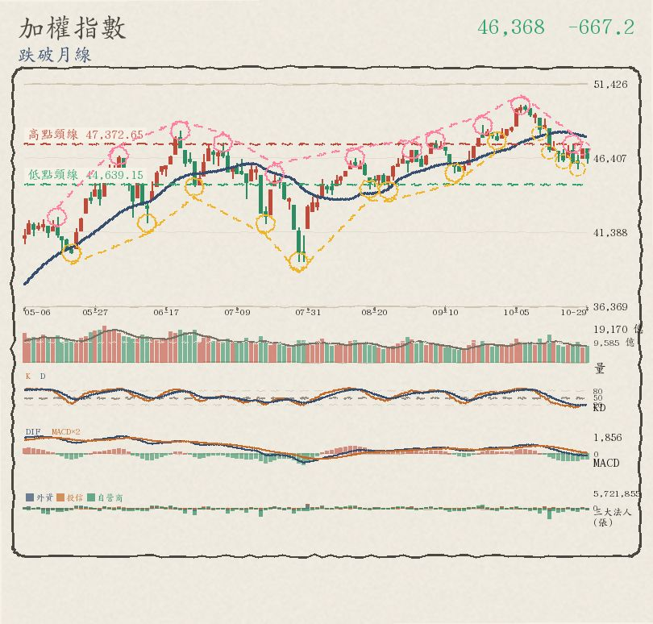
圖說：加權指數日 K（與個股圖相同標記）：黃圈＝轉折低點、粉圈＝轉折高點、虛線小圈＝還沒確認的轉折、藍線＝月線 MA20、水平虛線＝高點／低點頸線。最後一根是資料日當天。
本區塊為公開資料的技術面觀察，不構成投資建議，
不報牌、不預測、不下買賣決策。成交金額為集中市場總成交金額（含 ETF／權證），
與頁首摘要的「上市個股成交金額」口徑不同。標籤是統計，不是評分、也不是推薦。
上市 vs 上櫃（同期快篩）
加權 -1.42% vs 櫃買 -1.83%（同向） → 同向
（兩個市場分開寫，不合併成一個數字；櫃買為 TPEX 公開資料）
櫃買歷史：TPEX 逐日回補 130 根；來源：櫃買中心 www/zh-tw/indexInfo/sectinx（逐日，官方；OpenAPI tpex_index 只回當月）
（TPEX OpenAPI 只回當月，故逐日回補；歷史不足就不算該條均線並標「資料不足」，不用錯數字）
近 20 個交易日大盤狀態回溯（最新在上）（點開看逐日主狀態／量比／量價象限）
用同一支程式回算最近 20 個交易日（主狀態 S1~S8 與量比 20 皆為當日收盤當時的判定，
不是事後調整）；量比 20 未公布的日子寫「—」。
好條件最多的（前 10）
不好條件最多的（前 10）
本期市場狀態：多頭（等權指數在 60 日均線之上）（多頭期間：趨勢類條件（站上月線／月線向上／突破頸線…）有效，回測後 20 日差距最大 +2.09%（t=12.2））
好條件（7 項）：站上月線、月線向上、底底高、頭頭高、突破頸線、外資買超、量價攻擊（收紅＋大量）。
不好條件（5 項）：在月線之下、月線下彎、相對大盤弱、今日下跌、外資賣超。
兩邊都是同一組資料（日線結構＋當日收盤量價籌碼）算出來的「符合項目數」，只是方向相反；
條件數不是評分、也不是推薦，不構成投資建議。
上升趨勢：底底高 ＋ 頭頭高（6 上市 5／上櫃 1）
量價攻擊（收紅＋大量）（12 上市 7／上櫃 5）
跌破前低（線型轉弱）（16 上市 12／上櫃 4）
逐檔分析（70 檔）
區間或轉弱 成交金額 443.17 億・全榜第 1 名（上市第 1 名）
好條件 0/7：無
不好條件 4/5：在月線之下、月線下彎、今日下跌、外資賣超
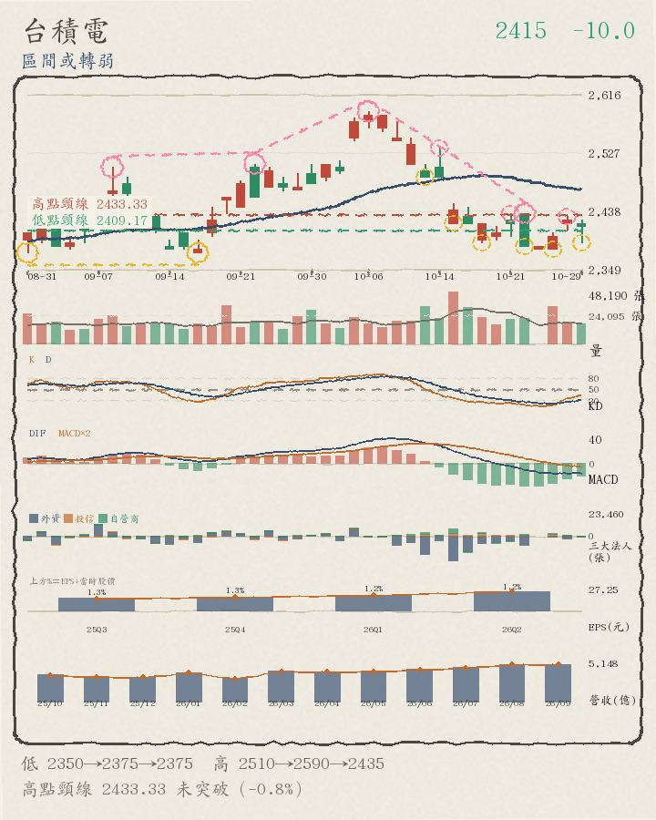
今天收黑、成交量也比平均少、跌破月線 2471，離高點頸線 2433.33 還差 0.8%，轉折還沒走出明顯方向。
- 月線位置：收盤 2415 在月線 2471 之下；5 日線 2402 也在月線之下（短均在下）；月線走平或向下、5 日線走平或向下
- 量能：成交量是 20 日均量的 0.74 倍，比 20 日均量少很多
- 關鍵價位：高點頸線 2433.33 還沒突破，差 0.8%；最近轉折高點 2435（低於 0.8%）；最近轉折低點 2375（高於 1.7%）
- 轉折結構：低點 2350、2375、2375 與高點 2510、2590、2435 都沒有明顯遞增，屬於區間震盪或轉弱；還沒確認的轉折低點 10-27 2380、10-29 2390；還沒確認的轉折高點 10-21 2435、10-28 2430（圖上虛線小圈）
底部墊高、未過前高 成交金額 409.61 億・全榜第 2 名（上市第 2 名）
好條件 1/7：底底高
不好條件 5/5：在月線之下、月線下彎、相對大盤弱、今日下跌、外資賣超
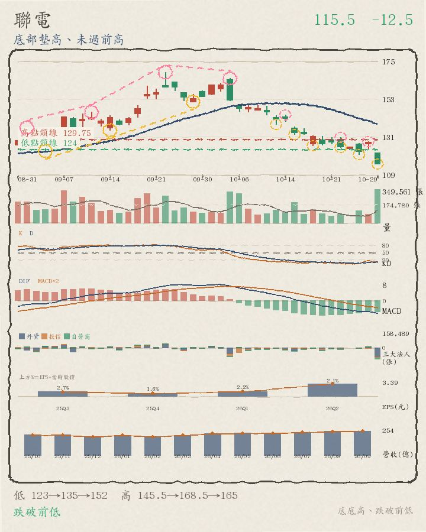
今天帶量收黑、跌破月線 138.625，跌破前一個轉折低點（高點頸線 129.75 還在收盤上方），底部還在墊高（但高點沒同步創高）。
- 月線位置：收盤 115.5 在月線 138.625 之下；5 日線 123.4 也在月線之下（短均在下）；月線走平或向下、5 日線走平或向下
- 量能：成交量是 20 日均量的 2.64 倍，比 20 日均量大不少；收黑卻量增，量價背離
- 關鍵價位：高點頸線 129.75 還沒突破、還在收盤上方 11.0%；最近轉折高點 165（低於 30.0%）；最近轉折低點 151.5（低於 23.8%）
- 轉折結構：低點 123、135、151.5 墊高 23.2%（底底高），但高點 145.5、168.5、165 沒有同步創高；還沒確認的轉折低點 10-27 121、10-29 115.5；還沒確認的轉折高點 10-22 131、10-28 128.5（圖上虛線小圈）
區間或轉弱 成交金額 298.82 億・全榜第 4 名（上市第 3 名）
好條件 2/7：突破頸線、外資買超
不好條件 2/5：在月線之下、月線下彎
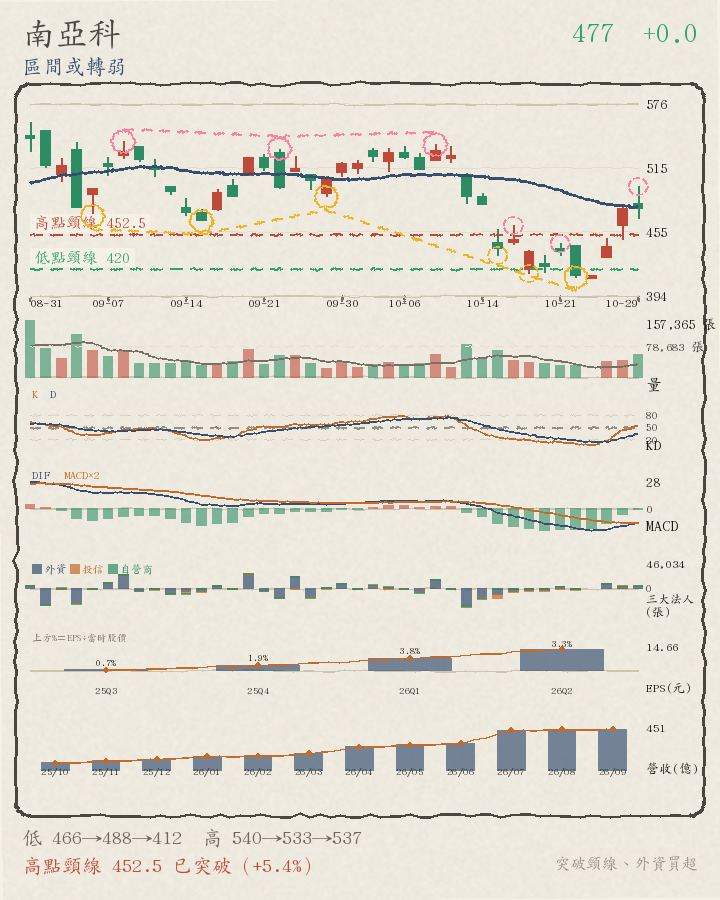
今天帶量收黑、跌破月線 478.25，已站上高點頸線 452.5，轉折還沒走出明顯方向。
- 月線位置：收盤 477 在月線 478.25 之下；5 日線 444.6 也在月線之下（短均在下）；月線走平或向下、5 日線向上
- 量能：成交量是 20 日均量的 1.45 倍，比 20 日均量大不少；收黑卻量增，量價背離
- 關鍵價位：高點頸線 452.5 已站上；最近轉折高點 537（低於 11.2%）；最近轉折低點 412（高於 15.8%）
- 轉折結構：低點 465.5、488、412 與高點 540、533、537 都沒有明顯遞增，屬於區間震盪或轉弱；還沒確認的轉折低點 10-15 432.5、10-19 415.5；還沒確認的轉折高點 10-21 444、10-29 497.5（圖上虛線小圈）
底部墊高、未過前高 成交金額 281.25 億・全榜第 5 名（上市第 4 名）
好條件 1/7：底底高
不好條件 5/5：在月線之下、月線下彎、相對大盤弱、今日下跌、外資賣超
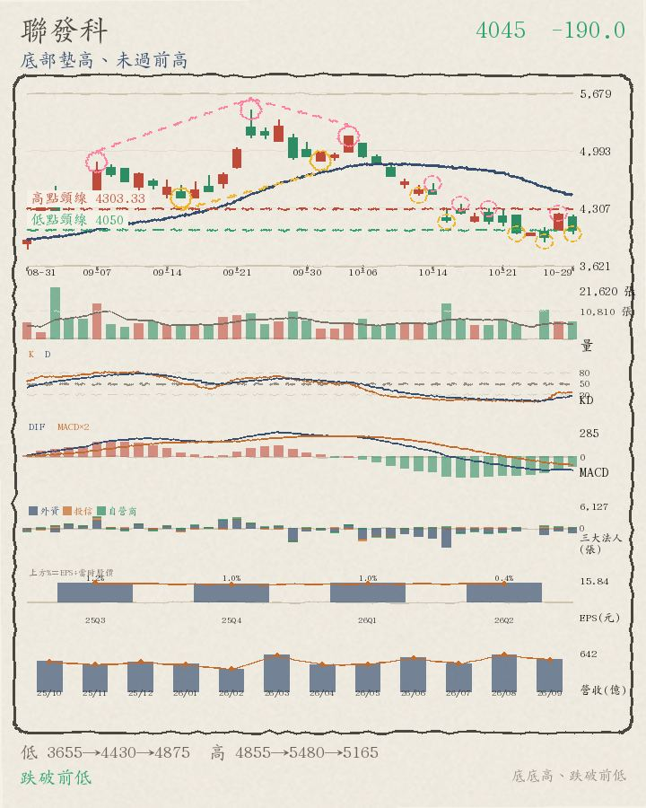
今天收黑、成交量也比平均少、跌破月線 4462.75，跌破前一個轉折低點（高點頸線 4303.33 還在收盤上方），底部還在墊高（但高點沒同步創高）。
- 月線位置：收盤 4045 在月線 4462.75 之下；5 日線 4052 也在月線之下（短均在下）；月線走平或向下、5 日線走平或向下
- 量能：成交量是 20 日均量的 0.93 倍，比 20 日均量少一些
- 關鍵價位：高點頸線 4303.33 還沒突破、還在收盤上方 6.0%；最近轉折高點 5165（低於 21.7%）；最近轉折低點 4875（低於 17.0%）
- 轉折結構：低點 3655、4430、4875 墊高 33.4%（底底高），但高點 4855、5480、5165 沒有同步創高；還沒確認的轉折低點 10-27 3910、10-29 4000；還沒確認的轉折高點 10-20 4305、10-28 4245（圖上虛線小圈）
高點墊高、底部不穩 成交金額 259.22 億・全榜第 6 名（上市第 5 名）
好條件 1/7：頭頭高
不好條件 5/5：在月線之下、月線下彎、相對大盤弱、今日下跌、外資賣超
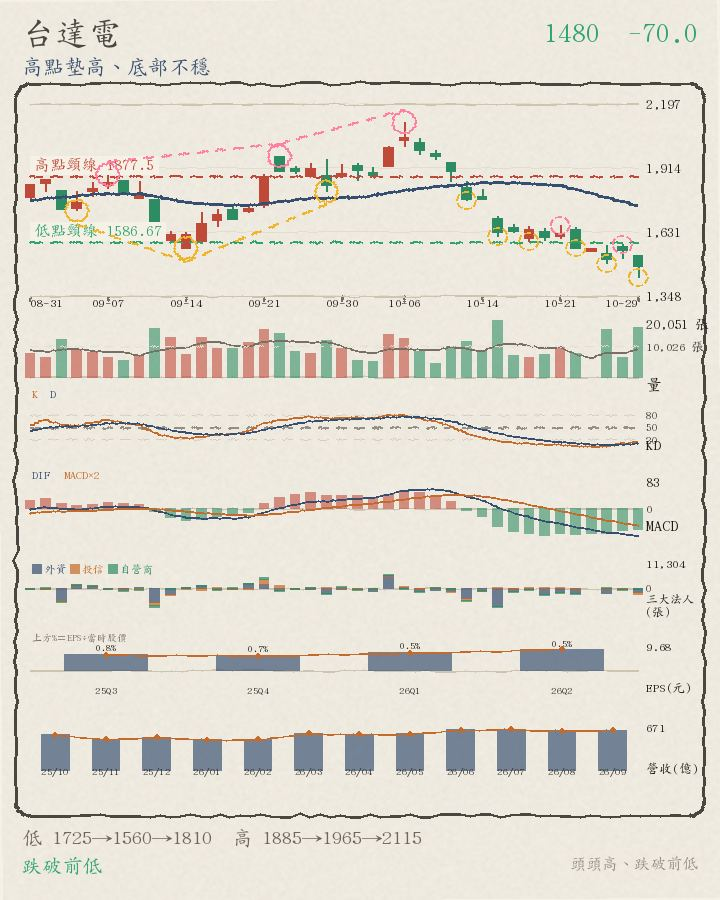
今天帶量收黑、跌破月線 1747.25，跌破前一個轉折低點（高點頸線 1877.5 還在收盤上方），高點還在墊高（但底部沒同步墊高）。
- 月線位置：收盤 1480 在月線 1747.25 之下；5 日線 1532 也在月線之下（短均在下）；月線走平或向下、5 日線走平或向下
- 量能：成交量是 20 日均量的 1.72 倍，比 20 日均量大不少；收黑卻量增，量價背離
- 關鍵價位：高點頸線 1877.5 還沒突破、還在收盤上方 21.2%；最近轉折高點 2115（低於 30.0%）；最近轉折低點 1810（低於 18.2%）
- 轉折結構：高點 1885、1965、2115 墊高 12.2%（頭頭高），但低點 1725、1560、1810 沒有同步墊高；還沒確認的轉折低點 10-27 1490、10-29 1430；還沒確認的轉折高點 10-21 1660、10-28 1575（圖上虛線小圈）
剛突破前高 成交金額 228.28 億・全榜第 7 名（上市第 6 名）
好條件 5/7：站上月線、月線向上、頭頭高、外資買超、量價攻擊（收紅＋大量）
不好條件 0/5：無
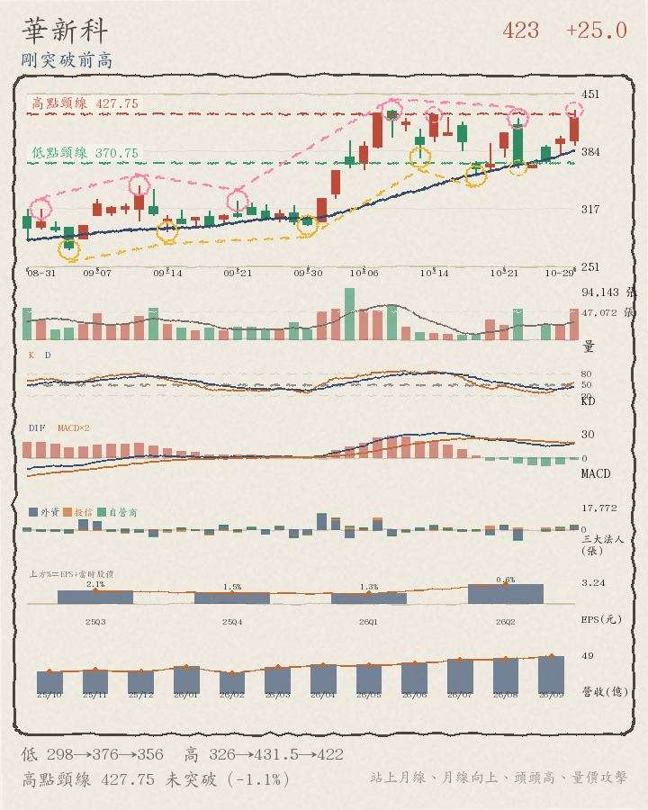
今天帶量收紅、站上月線 385.025，離高點頸線 427.75 還差 1.1%，高點還在墊高（但底部沒同步墊高）。
- 月線位置：收盤 423 在月線 385.025 之上；5 日線 385.9 也在月線之上（短均在上）；月線向上、5 日線走平或向下
- 量能：成交量是 20 日均量的 1.61 倍，比 20 日均量大不少；收紅又量增，量價配合
- 關鍵價位：高點頸線 427.75 還沒突破，差 1.1%；最近轉折高點 422（高於 0.2%）；最近轉折低點 355.5（高於 19.0%）
- 轉折結構：高點 326、431.5、422 墊高 2.3%（頭頭高），但低點 298.5、376.5、355.5 沒有同步墊高；還沒確認的轉折低點 10-22 365；還沒確認的轉折高點 10-14 426、10-29 431.5（圖上虛線小圈）
區間或轉弱 成交金額 224.94 億・全榜第 8 名（上市第 7 名）
好條件 2/7：站上月線、月線向上
不好條件 3/5：相對大盤弱、今日下跌、外資賣超
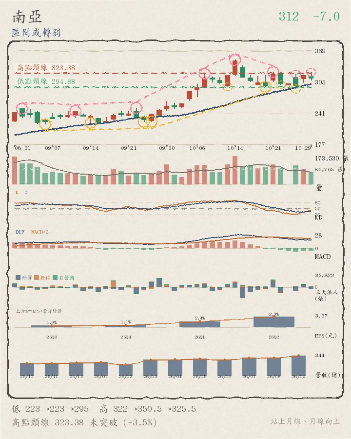
今天收黑、成交量也比平均少、站上月線 300.775，離高點頸線 323.38 還差 3.5%，轉折還沒走出明顯方向。
- 月線位置：收盤 312 在月線 300.775 之上；5 日線 306.1 也在月線之上（短均在上）；月線向上、5 日線走平或向下
- 量能：成交量是 20 日均量的 0.71 倍，比 20 日均量少很多
- 關鍵價位：高點頸線 323.38 還沒突破，差 3.5%；最近轉折高點 325.5（低於 4.1%）；最近轉折低點 295（高於 5.8%）
- 轉折結構：低點 223、223、295 與高點 322、350.5、325.5 都沒有明顯遞增，屬於區間震盪或轉弱；還沒確認的轉折低點 10-22 299、10-27 290.5；還沒確認的轉折高點 10-27 321、10-29 325（圖上虛線小圈）
高點墊高、底部不穩 成交金額 202.02 億・全榜第 9 名（上市第 8 名）
好條件 2/7：月線向上、頭頭高
不好條件 4/5：在月線之下、相對大盤弱、今日下跌、外資賣超
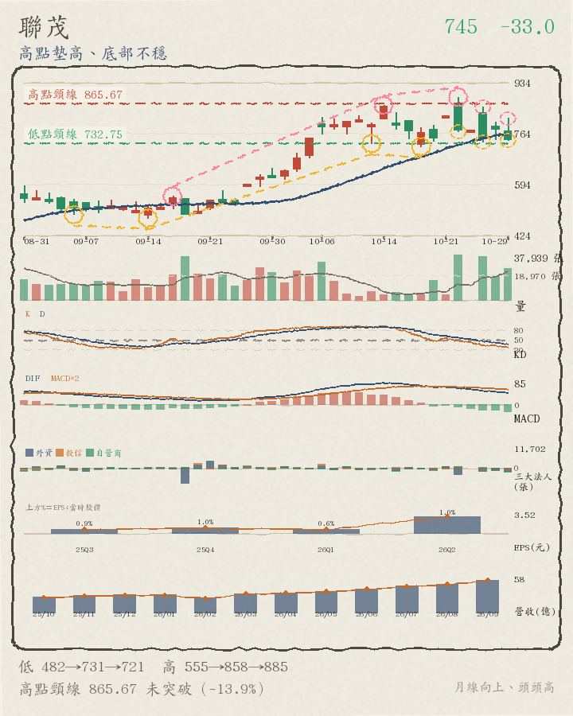
今天帶量收黑、跌破月線 764.3，離高點頸線 865.67 還差 13.9%，高點還在墊高（但底部沒同步墊高）。
- 月線位置：收盤 745 在月線 764.3 之下；5 日線 764.6 也在月線之上（短均在上）；月線向上、5 日線走平或向下
- 量能：成交量是 20 日均量的 1.62 倍，比 20 日均量大不少；收黑卻量增，量價背離
- 關鍵價位：高點頸線 865.67 還沒突破，差 13.9%；最近轉折高點 885（低於 15.8%）；最近轉折低點 721（高於 3.3%）
- 轉折結構：高點 555、858、885 墊高 59.5%（頭頭高），但低點 482、731、721 沒有同步墊高；還沒確認的轉折低點 10-27 737、10-29 742；還沒確認的轉折高點 10-27 854、10-29 815（圖上虛線小圈）
底部墊高、未過前高 成交金額 195.33 億・全榜第 10 名（上市第 9 名）
好條件 3/7：月線向上、底底高、外資買超
不好條件 2/5：在月線之下、今日下跌
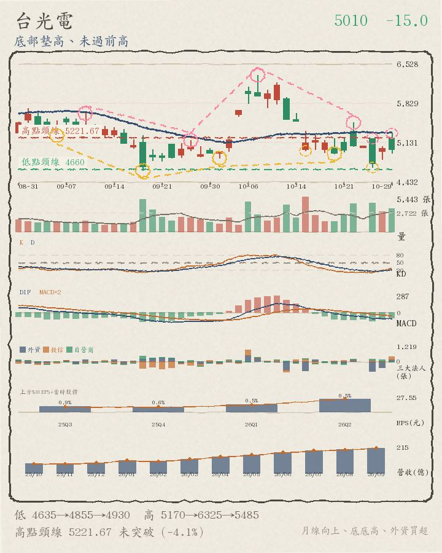
今天帶量收黑、跌破月線 5311.25，離高點頸線 5221.67 還差 4.1%，底部還在墊高（但高點沒同步創高）。
- 月線位置：收盤 5010 在月線 5311.25 之下；5 日線 4985 也在月線之下（短均在下）；月線向上、5 日線走平或向下
- 量能：成交量是 20 日均量的 1.35 倍，比 20 日均量大不少；收黑卻量增，量價背離
- 關鍵價位：高點頸線 5221.67 還沒突破，差 4.1%；最近轉折高點 5485（低於 8.7%）；最近轉折低點 4930（高於 1.6%）
- 轉折結構：低點 4635、4855、4930 墊高 6.4%（底底高），但高點 5170、6325、5485 沒有同步創高；還沒確認的轉折低點 10-15 4980、10-27 4685；還沒確認的轉折高點 10-27 5200、10-29 5295（圖上虛線小圈）
底部墊高、未過前高 成交金額 177.23 億・全榜第 11 名（上市第 10 名）
好條件 2/7：月線向上、底底高
不好條件 4/5：在月線之下、相對大盤弱、今日下跌、外資賣超
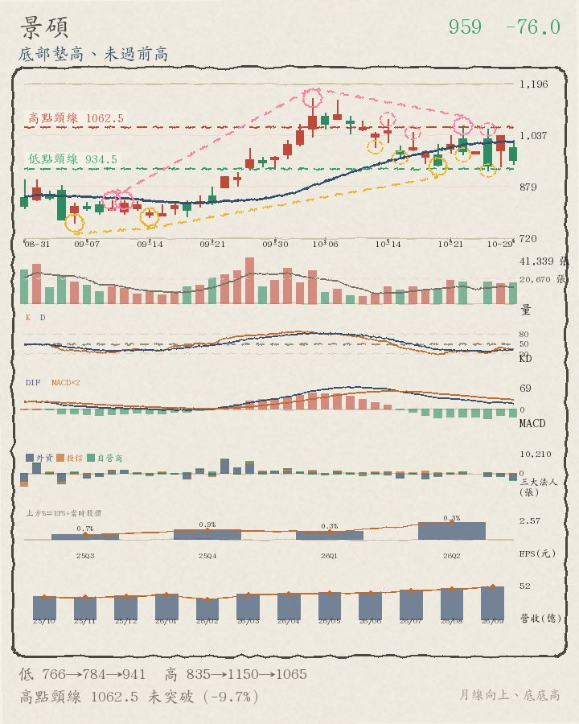
今天帶量收黑、跌破月線 1017.15，離高點頸線 1062.5 還差 9.7%，底部還在墊高（但高點沒同步創高）。
- 月線位置：收盤 959 在月線 1017.15 之下；5 日線 981.4 也在月線之下（短均在下）；月線向上、5 日線走平或向下
- 量能：成交量是 20 日均量的 1.14 倍，比 20 日均量大一些；收黑卻量增，量價背離
- 關鍵價位：高點頸線 1062.5 還沒突破，差 9.7%；最近轉折高點 1065（低於 10.0%）；最近轉折低點 941（高於 1.9%）
- 轉折結構：低點 766、784、941 墊高 22.8%（底底高），但高點 835、1150、1065 沒有同步創高；還沒確認的轉折低點 10-22 976、10-27 928；還沒確認的轉折高點 10-16 1045、10-27 1055（圖上虛線小圈）
底部墊高、未過前高 成交金額 163.86 億・全榜第 12 名（上市第 11 名）
好條件 1/7：底底高
不好條件 5/5：在月線之下、月線下彎、相對大盤弱、今日下跌、外資賣超
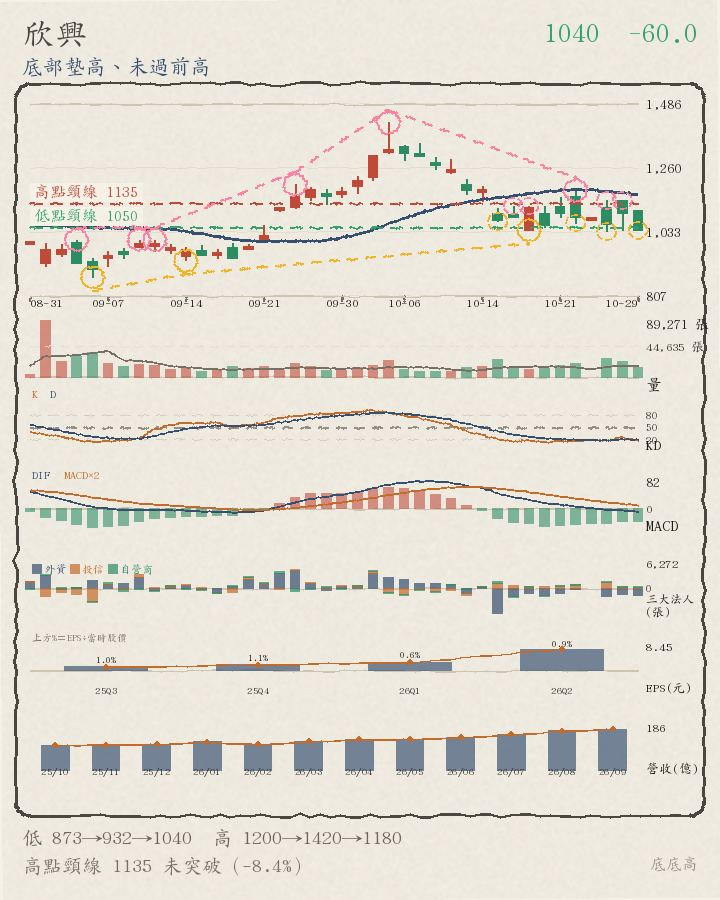
今天收黑、成交量也比平均少、跌破月線 1166.75，離高點頸線 1135 還差 8.4%，底部還在墊高（但高點沒同步創高）。
- 月線位置：收盤 1040 在月線 1166.75 之下；5 日線 1074 也在月線之下（短均在下）；月線走平或向下、5 日線走平或向下
- 量能：成交量是 20 日均量的 0.94 倍，比 20 日均量少一些
- 關鍵價位：高點頸線 1135 還沒突破，差 8.4%；最近轉折高點 1180（低於 11.9%）；最近轉折低點 1040（高於 0.0%）
- 轉折結構：低點 873、932、1040 墊高 19.1%（底底高），但高點 1200、1420、1180 沒有同步創高；還沒確認的轉折低點 10-27 1035、10-29 1040；還沒確認的轉折高點 10-27 1145、10-28 1145（圖上虛線小圈）
區間或轉弱 成交金額 160.96 億・全榜第 13 名（上市第 12 名）
好條件 0/7：無
不好條件 4/5：在月線之下、月線下彎、今日下跌、外資賣超
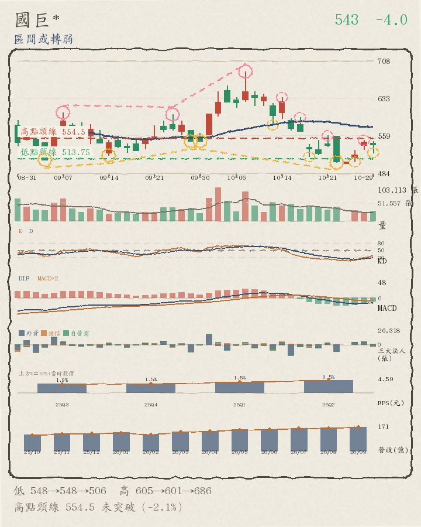
今天收黑、成交量也比平均少、跌破月線 576.75，離高點頸線 554.5 還差 2.1%，轉折還沒走出明顯方向。
- 月線位置：收盤 543 在月線 576.75 之下；5 日線 525 也在月線之下（短均在下）；月線走平或向下、5 日線走平或向下
- 量能：成交量是 20 日均量的 0.64 倍，比 20 日均量少很多
- 關鍵價位：高點頸線 554.5 還沒突破，差 2.1%；最近轉折高點 686（低於 20.8%）；最近轉折低點 506（高於 7.3%）
- 轉折結構：低點 548、548、506 與高點 605、601、686 都沒有明顯遞增，屬於區間震盪或轉弱；還沒確認的轉折低點 10-27 507、10-29 525；還沒確認的轉折高點 10-21 559、10-28 550（圖上虛線小圈）
區間或轉弱 成交金額 149.01 億・全榜第 15 名（上市第 13 名）
好條件 1/7：外資買超
不好條件 4/5：在月線之下、月線下彎、相對大盤弱、今日下跌
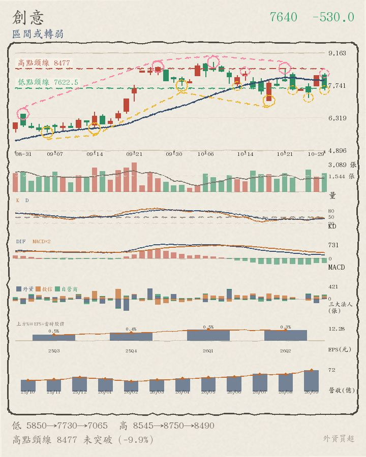
今天帶量收黑、跌破月線 7960.5，離高點頸線 8477 還差 9.9%，轉折還沒走出明顯方向。
- 月線位置：收盤 7640 在月線 7960.5 之下；5 日線 7682 也在月線之下（短均在下）；月線走平或向下、5 日線走平或向下
- 量能：成交量是 20 日均量的 1.39 倍，比 20 日均量大不少；收黑卻量增，量價背離
- 關鍵價位：高點頸線 8477 還沒突破，差 9.9%；最近轉折高點 8490（低於 10.0%）；最近轉折低點 7065（高於 8.1%）
- 轉折結構：低點 5850、7730、7065 與高點 8545、8750、8490 都沒有明顯遞增，屬於區間震盪或轉弱；還沒確認的轉折低點 10-27 7200、10-29 7530；還沒確認的轉折高點 10-14 8345、10-29 8255（圖上虛線小圈）
區間或轉弱 成交金額 144.29 億・全榜第 16 名（上市第 14 名）
好條件 0/7：無
不好條件 5/5：在月線之下、月線下彎、相對大盤弱、今日下跌、外資賣超
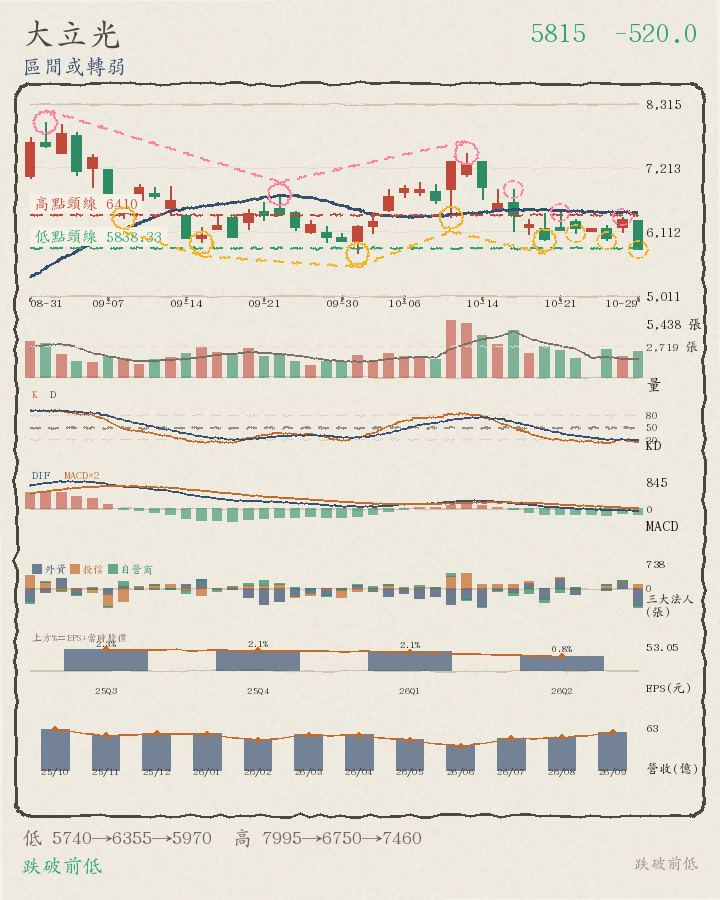
今天收黑、成交量也比平均少、跌破月線 6445.25，跌破前一個轉折低點（高點頸線 6410 還在收盤上方），轉折還沒走出明顯方向。
- 月線位置：收盤 5815 在月線 6445.25 之下；5 日線 6100 也在月線之下（短均在下）；月線走平或向下、5 日線走平或向下
- 量能：成交量是 20 日均量的 0.90 倍，比 20 日均量少一些
- 關鍵價位：高點頸線 6410 還沒突破、還在收盤上方 9.3%；最近轉折高點 7460（低於 22.1%）；最近轉折低點 5970（低於 2.6%）
- 轉折結構：低點 5740、6355、5970 與高點 7995、6750、7460 都沒有明顯遞增，屬於區間震盪或轉弱；還沒確認的轉折低點 10-27 5960、10-29 5815；還沒確認的轉折高點 10-21 6450、10-28 6370（圖上虛線小圈）
區間或轉弱 成交金額 139.43 億・全榜第 17 名（上市第 15 名）
好條件 2/7：站上月線、外資買超
不好條件 2/5：月線下彎、今日下跌
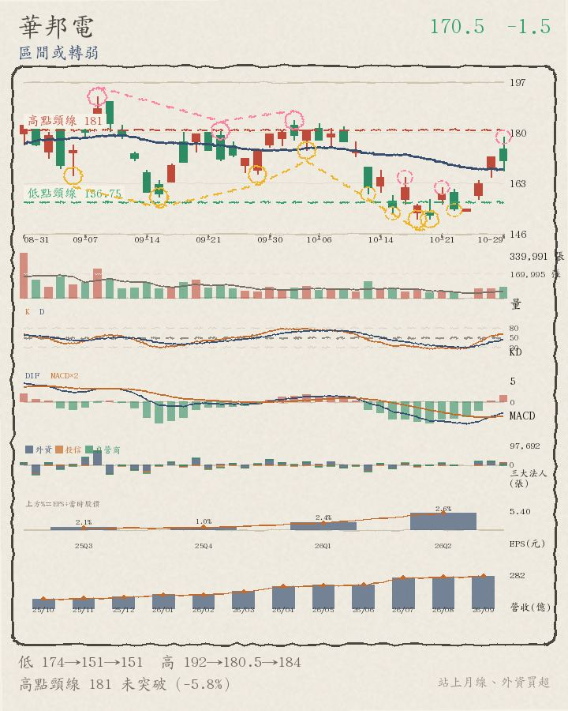
今天帶量收黑、站上月線 167.625，離高點頸線 181 還差 5.8%，轉折還沒走出明顯方向。
- 月線位置：收盤 170.5 在月線 167.625 之上；5 日線 162.9 也在月線之下（短均在下）；月線走平或向下、5 日線向上
- 量能：成交量是 20 日均量的 1.26 倍，比 20 日均量大不少；收黑卻量增，量價背離
- 關鍵價位：高點頸線 181 還沒突破，差 5.8%；最近轉折高點 184（低於 7.3%）；最近轉折低點 151（高於 12.9%）
- 轉折結構：低點 174、151、151 與高點 192、180.5、184 都沒有明顯遞增，屬於區間震盪或轉弱；還沒確認的轉折低點 10-15 153、10-22 154；還沒確認的轉折高點 10-21 161.5、10-29 178.5（圖上虛線小圈）
區間或轉弱 成交金額 124.88 億・全榜第 19 名（上市第 16 名）
好條件 1/7：量價攻擊（收紅＋大量）
不好條件 3/5：在月線之下、月線下彎、外資賣超
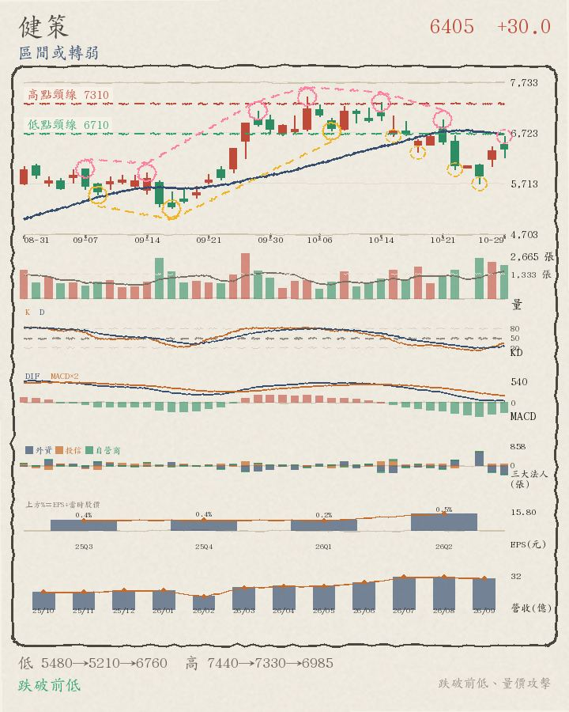
今天帶量收紅、跌破月線 6698.5，跌破前一個轉折低點（高點頸線 7310 還在收盤上方），轉折還沒走出明顯方向。
- 月線位置：收盤 6405 在月線 6698.5 之下；5 日線 6156 也在月線之下（短均在下）；月線走平或向下、5 日線走平或向下
- 量能：成交量是 20 日均量的 1.53 倍，比 20 日均量大不少；收紅又量增，量價配合
- 關鍵價位：高點頸線 7310 還沒突破、還在收盤上方 12.4%；最近轉折高點 6985（低於 8.3%）；最近轉折低點 6760（低於 5.3%）
- 轉折結構：低點 5480、5210、6760 與高點 7440、7330、6985 都沒有明顯遞增，屬於區間震盪或轉弱；還沒確認的轉折低點 10-22 5995、10-27 5710；還沒確認的轉折高點 10-29 6655（圖上虛線小圈）
底部墊高、未過前高 成交金額 103.79 億・全榜第 21 名（上市第 17 名）
好條件 2/7：月線向上、底底高
不好條件 4/5：在月線之下、相對大盤弱、今日下跌、外資賣超
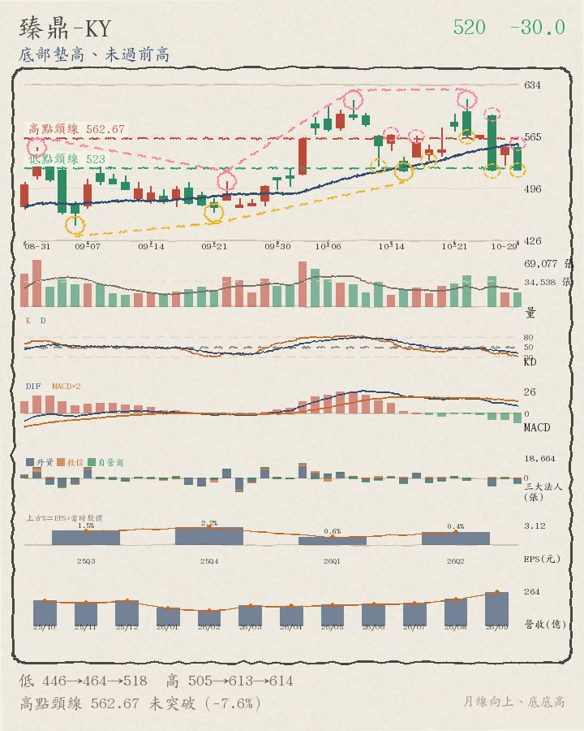
今天收黑、成交量也比平均少、跌破月線 554.35，離高點頸線 562.67 還差 7.6%，底部還在墊高（但高點沒同步創高）。
- 月線位置：收盤 520 在月線 554.35 之下；5 日線 544.8 也在月線之下（短均在下）；月線向上、5 日線走平或向下
- 量能：成交量是 20 日均量的 0.58 倍，比 20 日均量少很多
- 關鍵價位：高點頸線 562.67 還沒突破，差 7.6%；最近轉折高點 614（低於 15.3%）；最近轉折低點 518（高於 0.4%）
- 轉折結構：低點 446.5、463.5、518 墊高 16.0%（底底高），但高點 505、613、614 沒有同步創高；還沒確認的轉折低點 10-27 519、10-29 520；還沒確認的轉折高點 10-27 594、10-29 555（圖上虛線小圈）
底部墊高、未過前高 成交金額 98.95 億・全榜第 22 名（上市第 18 名）
好條件 1/7：底底高
不好條件 5/5：在月線之下、月線下彎、相對大盤弱、今日下跌、外資賣超
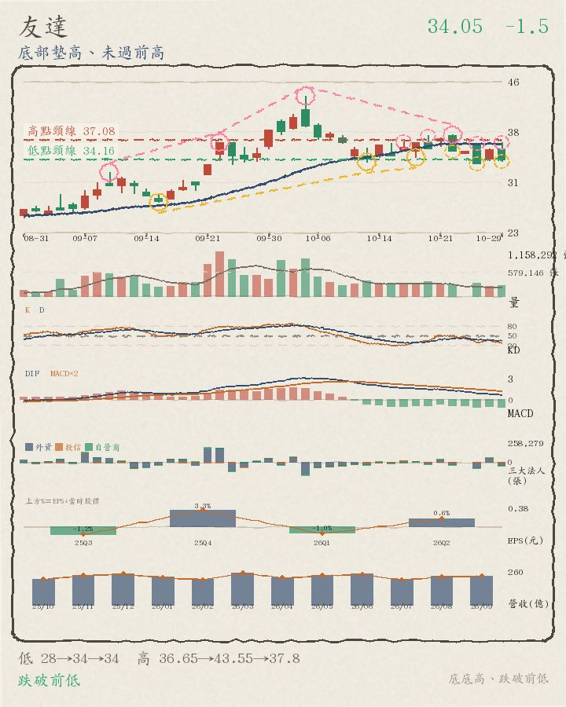
今天收黑、成交量也比平均少、跌破月線 36.433，跌破前一個轉折低點（高點頸線 37.08 還在收盤上方），底部還在墊高（但高點沒同步創高）。
- 月線位置：收盤 34.05 在月線 36.433 之下；5 日線 34.77 也在月線之下（短均在下）；月線走平或向下、5 日線走平或向下
- 量能：成交量是 20 日均量的 0.65 倍，比 20 日均量少很多
- 關鍵價位：高點頸線 37.08 還沒突破、還在收盤上方 8.2%；最近轉折高點 37.8（低於 9.9%）；最近轉折低點 34.45（低於 1.2%）
- 轉折結構：低點 27.75、33.75、34.45 墊高 24.1%（底底高），但高點 36.65、43.55、37.8 沒有同步創高；還沒確認的轉折低點 10-27 33.45、10-29 33.85；還沒確認的轉折高點 10-27 36.55、10-29 36.65（圖上虛線小圈）
剛突破前高 成交金額 90.53 億・全榜第 24 名（上市第 19 名）
好條件 1/7：頭頭高
不好條件 5/5：在月線之下、月線下彎、相對大盤弱、今日下跌、外資賣超
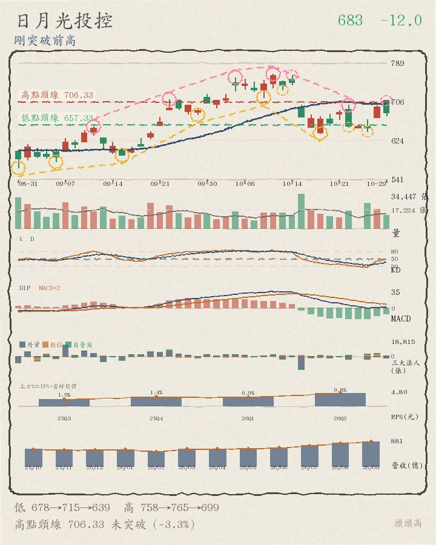
今天收黑、成交量也比平均少、跌破月線 701.6，離高點頸線 706.33 還差 3.3%，高點還在墊高（但底部沒同步墊高）。
- 月線位置：收盤 683 在月線 701.6 之下；5 日線 667.4 也在月線之下（短均在下）；月線走平或向下、5 日線走平或向下
- 量能：成交量是 20 日均量的 0.86 倍，比 20 日均量少一些
- 關鍵價位：高點頸線 706.33 還沒突破，差 3.3%；最近轉折高點 699（低於 2.3%）；最近轉折低點 639（高於 6.9%）
- 轉折結構：高點 758、765、699 墊高 1.4%（頭頭高），但低點 678、715、639 沒有同步墊高；還沒確認的轉折低點 10-22 652、10-27 642；還沒確認的轉折高點 10-14 763、10-29 709（圖上虛線小圈）
區間或轉弱 成交金額 89.64 億・全榜第 25 名（上市第 20 名）
好條件 1/7：月線向上
不好條件 4/5：在月線之下、相對大盤弱、今日下跌、外資賣超
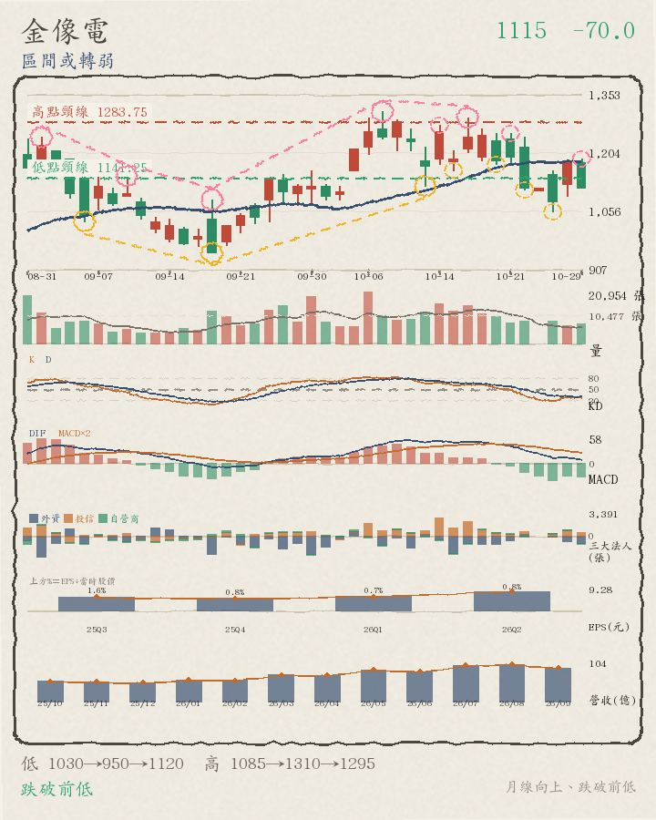
今天收黑、成交量也比平均少、跌破月線 1183.25，跌破前一個轉折低點（高點頸線 1283.75 還在收盤上方），轉折還沒走出明顯方向。
- 月線位置：收盤 1115 在月線 1183.25 之下；5 日線 1122 也在月線之下（短均在下）；月線向上、5 日線走平或向下
- 量能：成交量是 20 日均量的 0.70 倍，比 20 日均量少很多
- 關鍵價位：高點頸線 1283.75 還沒突破、還在收盤上方 13.1%；最近轉折高點 1295（低於 13.9%）；最近轉折低點 1120（低於 0.4%）
- 轉折結構：低點 1030、950、1120 與高點 1085、1310、1295 都沒有明顯遞增，屬於區間震盪或轉弱；還沒確認的轉折低點 10-22 1110、10-27 1055；還沒確認的轉折高點 10-21 1255、10-29 1190（圖上虛線小圈）
區間或轉弱 成交金額 87.03 億・全榜第 26 名（上市第 21 名）
好條件 0/7：無
不好條件 5/5：在月線之下、月線下彎、相對大盤弱、今日下跌、外資賣超
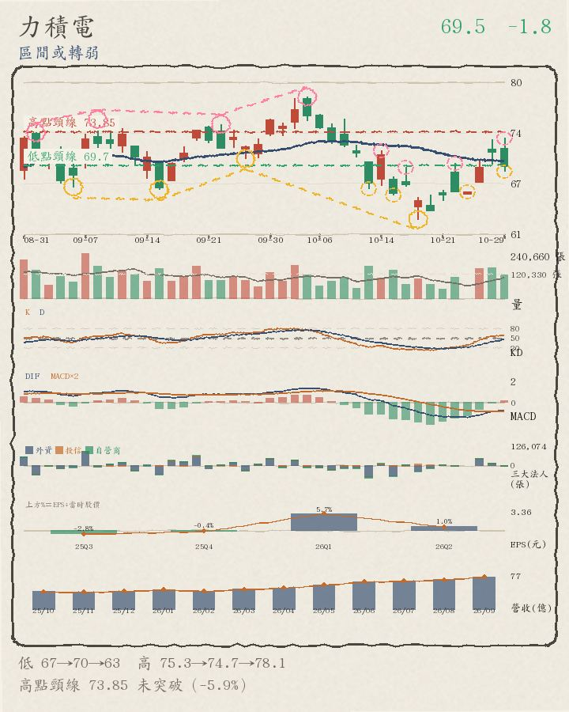
今天帶量收黑、跌破月線 70.16，離高點頸線 73.85 還差 5.9%，轉折還沒走出明顯方向。
- 月線位置：收盤 69.5 在月線 70.16 之下；5 日線 68.6 也在月線之下（短均在下）；月線走平或向下、5 日線向上
- 量能：成交量是 20 日均量的 1.12 倍，比 20 日均量大一些；收黑卻量增，量價背離
- 關鍵價位：高點頸線 73.85 還沒突破，差 5.9%；最近轉折高點 78.1（低於 11.0%）；最近轉折低點 63（高於 10.3%）
- 轉折結構：低點 66.7、70.5、63 與高點 75.3、74.7、78.1 都沒有明顯遞增，屬於區間震盪或轉弱；還沒確認的轉折低點 10-23 66.4、10-29 68.9；還沒確認的轉折高點 10-22 69.9、10-29 73（圖上虛線小圈）
剛突破前高 成交金額 85.78 億・全榜第 27 名（上市第 22 名）
好條件 4/7：站上月線、頭頭高、外資買超、量價攻擊（收紅＋大量）
不好條件 1/5：月線下彎
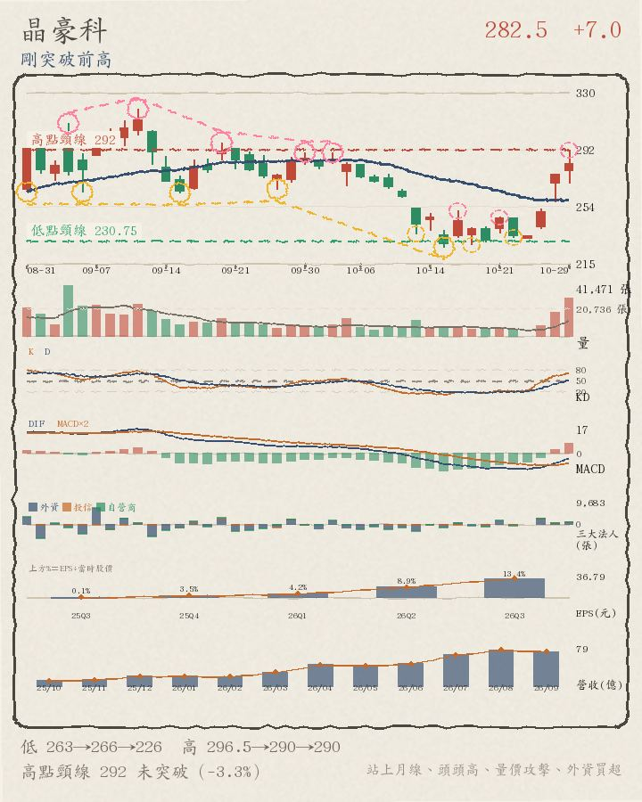
今天帶量收紅、站上月線 258.075，離高點頸線 292 還差 3.3%，高點還在墊高（但底部沒同步墊高）。
- 月線位置：收盤 282.5 在月線 258.075 之上；5 日線 255.3 也在月線之下（短均在下）；月線走平或向下、5 日線向上
- 量能：成交量是 20 日均量的 3.73 倍，比 20 日均量大不少；收紅又量增，量價配合
- 關鍵價位：高點頸線 292 還沒突破，差 3.3%；最近轉折高點 290（低於 2.6%）；最近轉折低點 226.5（高於 24.7%）
- 轉折結構：高點 296.5、290、290 墊高 0.5%（頭頭高），但低點 263、265.5、226.5 沒有同步墊高；還沒確認的轉折低點 10-19 228、10-22 233；還沒確認的轉折高點 10-21 246.5、10-29 291.5（圖上虛線小圈）
剛突破前高 成交金額 84.76 億・全榜第 28 名（上市第 23 名）
好條件 1/7：頭頭高
不好條件 5/5：在月線之下、月線下彎、相對大盤弱、今日下跌、外資賣超
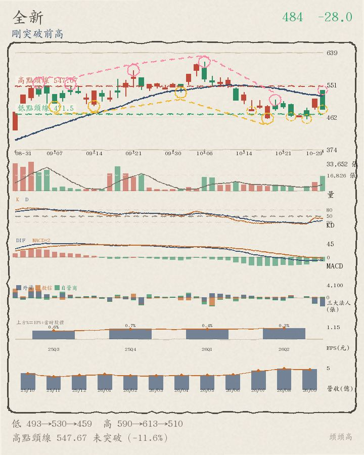
今天帶量收黑、跌破月線 520.15，離高點頸線 547.67 還差 11.6%，高點還在墊高（但底部沒同步墊高）。
- 月線位置：收盤 484 在月線 520.15 之下；5 日線 479.2 也在月線之下（短均在下）；月線走平或向下、5 日線走平或向下
- 量能：成交量是 20 日均量的 2.68 倍，比 20 日均量大不少；收黑卻量增，量價背離
- 關鍵價位：高點頸線 547.67 還沒突破，差 11.6%；最近轉折高點 510（低於 5.1%）；最近轉折低點 459（高於 5.4%）
- 轉折結構：高點 590、613、510 墊高 5.1%（頭頭高），但低點 493、530、459 沒有同步墊高；還沒確認的轉折低點 10-27 458、10-29 484；還沒確認的轉折高點 10-29 536（圖上虛線小圈）
底部墊高、突破前高 成交金額 81.84 億・全榜第 29 名（上市第 24 名）
好條件 7/7：站上月線、月線向上、底底高、頭頭高、突破頸線、外資買超、量價攻擊（收紅＋大量）
不好條件 0/5：無
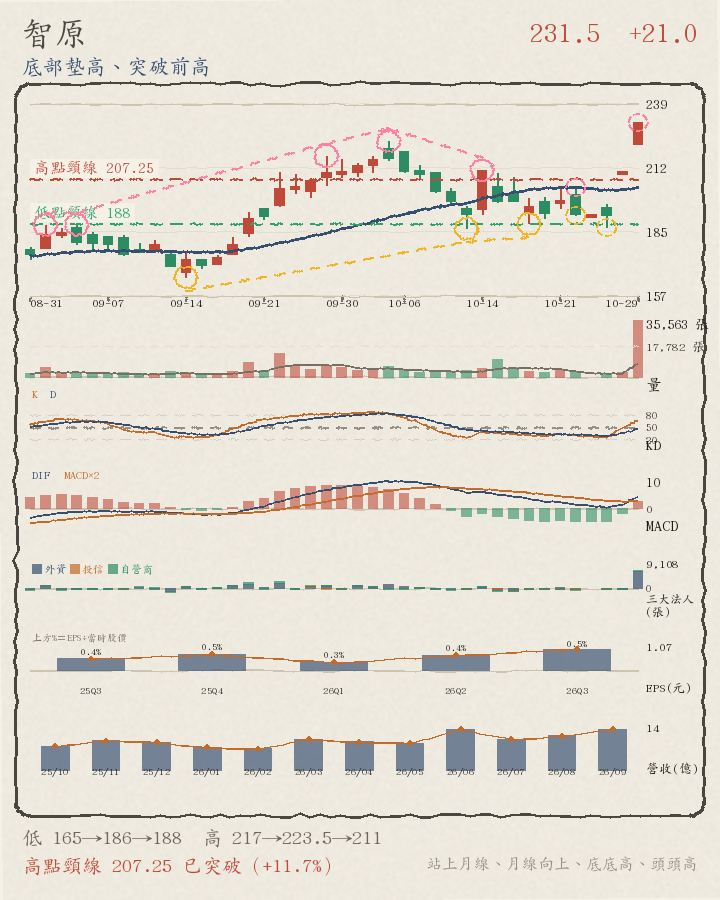
今天帶量收紅、站上月線 203.775，已站上高點頸線 207.25，轉折結構仍是底底高＋頭頭高。
- 月線位置：收盤 231.5 在月線 203.775 之上；5 日線 203.5 也在月線之下（短均在下）；月線向上、5 日線向上
- 量能：成交量是 20 日均量的 7.96 倍，比 20 日均量大不少；收紅又量增，量價配合
- 關鍵價位：高點頸線 207.25 已站上；最近轉折高點 211（高於 9.7%）；最近轉折低點 188（高於 23.1%）
- 轉折結構：低點 165、186、188 一路墊高 13.9%、高點 217、223.5、211 也一路墊高 9.7%，是底底高＋頭頭高；還沒確認的轉折低點 10-22 191.5、10-27 186.5；還沒確認的轉折高點 10-22 203.5、10-29 231.5（圖上虛線小圈）
剛突破前高 成交金額 79.67 億・全榜第 31 名（上市第 25 名）
好條件 4/7：站上月線、月線向上、頭頭高、外資買超
不好條件 2/5：相對大盤弱、今日下跌
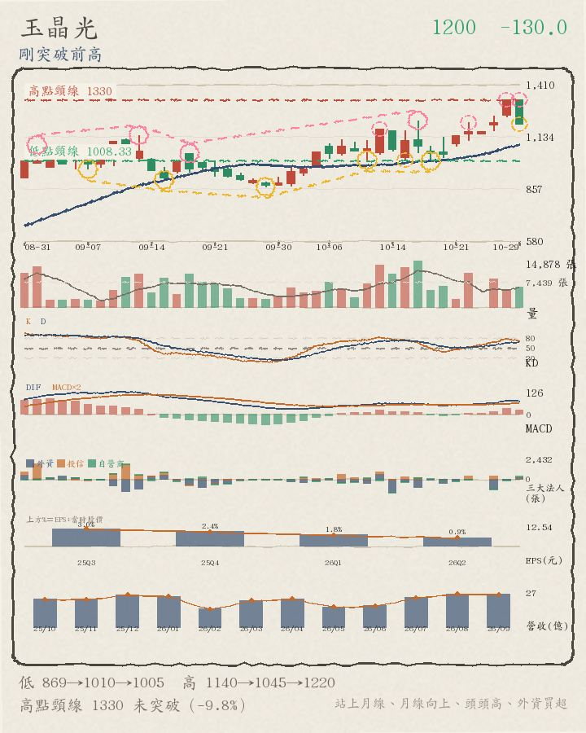
今天收黑、成交量也比平均少、站上月線 1092.05，離高點頸線 1330 還差 9.8%，高點還在墊高（但底部沒同步墊高）。
- 月線位置：收盤 1200 在月線 1092.05 之上；5 日線 1212 也在月線之上（短均在上）；月線向上、5 日線向上
- 量能：成交量是 20 日均量的 0.89 倍，比 20 日均量少一些
- 關鍵價位：高點頸線 1330 還沒突破，差 9.8%；最近轉折高點 1220（低於 1.6%）；最近轉折低點 1005（高於 19.4%）
- 轉折結構：高點 1140、1045、1220 墊高 9.0%（頭頭高），但低點 869、1010、1005 沒有同步墊高；還沒確認的轉折低點 10-15 1010、10-29 1200；還沒確認的轉折高點 10-28 1330、10-29 1330（圖上虛線小圈）
底部墊高、未過前高 成交金額 74.62 億・全榜第 33 名（上市第 26 名）
好條件 2/7：月線向上、底底高
不好條件 4/5：在月線之下、相對大盤弱、今日下跌、外資賣超
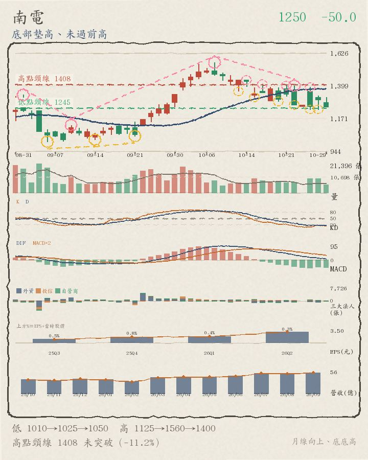
今天收黑、成交量也比平均少、跌破月線 1377.25，離高點頸線 1408 還差 11.2%，底部還在墊高（但高點沒同步創高）。
- 月線位置：收盤 1250 在月線 1377.25 之下；5 日線 1267 也在月線之下（短均在下）；月線向上、5 日線走平或向下
- 量能：成交量是 20 日均量的 0.60 倍，比 20 日均量少很多
- 關鍵價位：高點頸線 1408 還沒突破，差 11.2%；最近轉折高點 1400（低於 10.7%）；最近轉折低點 1050（高於 19.0%）
- 轉折結構：低點 1010、1025、1050 墊高 4.0%（底底高），但高點 1125、1560、1400 沒有同步創高；還沒確認的轉折低點 10-27 1235、10-28 1235；還沒確認的轉折高點 10-21 1400、10-27 1390（圖上虛線小圈）
上升趨勢（底底高＋頭頭高） 成交金額 72.87 億・全榜第 34 名（上市第 27 名）
好條件 5/7：站上月線、月線向上、底底高、頭頭高、突破頸線
不好條件 2/5：今日下跌、外資賣超
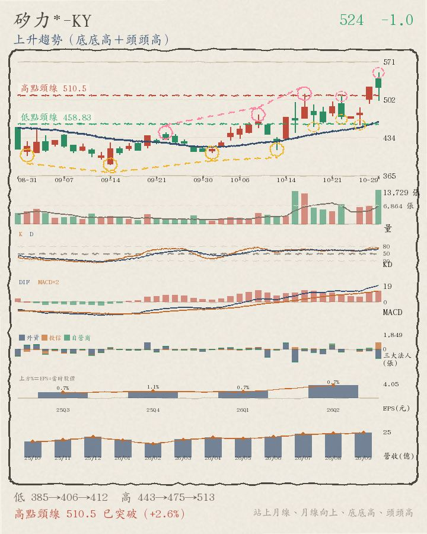
今天帶量收黑、站上月線 462.575，已站上高點頸線 510.5，轉折結構仍是底底高＋頭頭高。
- 月線位置：收盤 524 在月線 462.575 之上；5 日線 494.2 也在月線之上（短均在上）；月線向上、5 日線向上
- 量能：成交量是 20 日均量的 2.82 倍，比 20 日均量大不少；收黑卻量增，量價背離
- 關鍵價位：高點頸線 510.5 已站上；最近轉折高點 513（高於 2.1%）；最近轉折低點 412（高於 27.2%）
- 轉折結構：低點 385、406.5、412 一路墊高 7.0%、高點 443、475、513 也一路墊高 15.8%，是底底高＋頭頭高；還沒確認的轉折低點 10-22 467、10-27 456.5；還沒確認的轉折高點 10-22 508、10-29 551（圖上虛線小圈）
區間或轉弱 成交金額 67.43 億・全榜第 35 名（上市第 28 名）
好條件 0/7：無
不好條件 5/5：在月線之下、月線下彎、相對大盤弱、今日下跌、外資賣超
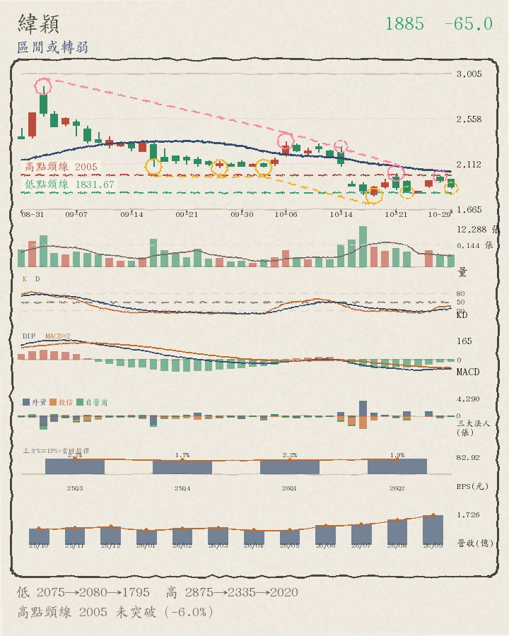
今天收黑、成交量也比平均少、跌破月線 2034.75，離高點頸線 2005 還差 6.0%，轉折還沒走出明顯方向。
- 月線位置：收盤 1885 在月線 2034.75 之下；5 日線 1893 也在月線之下（短均在下）；月線走平或向下、5 日線向上
- 量能：成交量是 20 日均量的 0.86 倍，比 20 日均量少一些
- 關鍵價位：高點頸線 2005 還沒突破，差 6.0%；最近轉折高點 2020（低於 6.7%）；最近轉折低點 1795（高於 5.0%）
- 轉折結構：低點 2075、2080、1795 與高點 2875、2335、2020 都沒有明顯遞增，屬於區間震盪或轉弱；還沒確認的轉折低點 10-22 1830、10-29 1870；還沒確認的轉折高點 10-14 2285、10-28 1990（圖上虛線小圈）
區間或轉弱 成交金額 66.77 億・全榜第 36 名（上市第 29 名）
好條件 0/7：無
不好條件 5/5：在月線之下、月線下彎、相對大盤弱、今日下跌、外資賣超
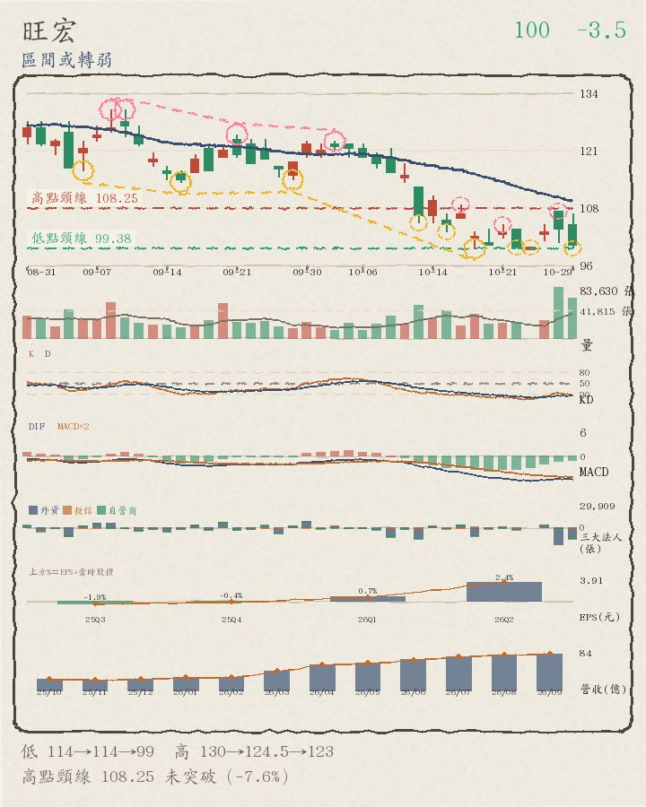
今天帶量收黑、跌破月線 109.725，離高點頸線 108.25 還差 7.6%，轉折還沒走出明顯方向。
- 月線位置：收盤 100 在月線 109.725 之下；5 日線 101.1 也在月線之下（短均在下）；月線走平或向下、5 日線走平或向下
- 量能：成交量是 20 日均量的 2.22 倍，比 20 日均量大不少；收黑卻量增，量價背離
- 關鍵價位：高點頸線 108.25 還沒突破，差 7.6%；最近轉折高點 123（低於 18.7%）；最近轉折低點 99.2（高於 0.8%）
- 轉折結構：低點 114、114.5、99.2 與高點 130、124.5、123 都沒有明顯遞增，屬於區間震盪或轉弱；還沒確認的轉折低點 10-23 99.5、10-29 99.3；還沒確認的轉折高點 10-21 104.5、10-28 107.5（圖上虛線小圈）
區間或轉弱 成交金額 64.79 億・全榜第 37 名（上市第 30 名）
好條件 0/7：無
不好條件 5/5：在月線之下、月線下彎、相對大盤弱、今日下跌、外資賣超
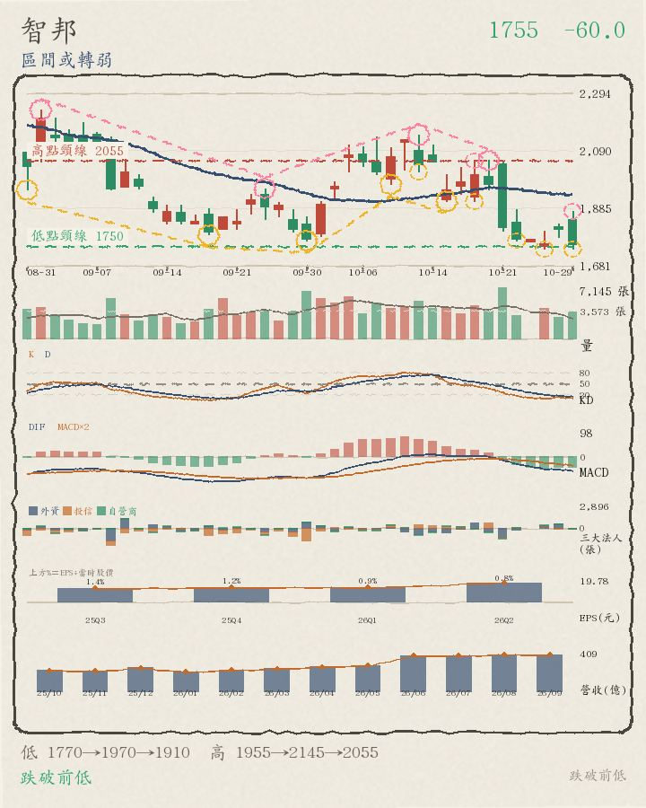
今天收黑、成交量也比平均少、跌破月線 1933.5，跌破前一個轉折低點（高點頸線 2055 還在收盤上方），轉折還沒走出明顯方向。
- 月線位置：收盤 1755 在月線 1933.5 之下；5 日線 1776 也在月線之下（短均在下）；月線走平或向下、5 日線走平或向下
- 量能：成交量是 20 日均量的 0.80 倍，比 20 日均量少很多
- 關鍵價位：高點頸線 2055 還沒突破、還在收盤上方 14.6%；最近轉折高點 2055（低於 14.6%）；最近轉折低點 1910（低於 8.1%）
- 轉折結構：低點 1770、1970、1910 與高點 1955、2145、2055 都沒有明顯遞增，屬於區間震盪或轉弱；還沒確認的轉折低點 10-27 1740、10-29 1740；還沒確認的轉折高點 10-19 2055、10-29 1875（圖上虛線小圈）
上升趨勢（底底高＋頭頭高） 成交金額 62.8 億・全榜第 38 名（上市第 31 名）
好條件 6/7：站上月線、月線向上、底底高、頭頭高、外資買超、量價攻擊（收紅＋大量）
不好條件 0/5：無
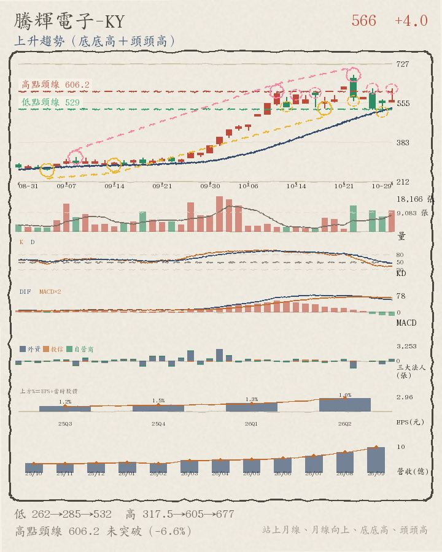
今天帶量收紅、站上月線 532.8，離高點頸線 606.2 還差 6.6%，轉折結構仍是底底高＋頭頭高。
- 月線位置：收盤 566 在月線 532.8 之上；5 日線 564.6 也在月線之上（短均在上）；月線向上、5 日線走平或向下
- 量能：成交量是 20 日均量的 1.60 倍，比 20 日均量大不少；收紅又量增，量價配合
- 關鍵價位：高點頸線 606.2 還沒突破，差 6.6%；最近轉折高點 677（低於 16.4%）；最近轉折低點 532（高於 6.4%）
- 轉折結構：低點 261.5、285、532 一路墊高 103.4%、高點 317.5、605、677 也一路墊高 113.2%，是底底高＋頭頭高；還沒確認的轉折低點 10-22 565、10-28 516；還沒確認的轉折高點 10-27 618、10-29 617（圖上虛線小圈）
世芯-KY 3661 上市
3680 -120.0
區間或轉弱 成交金額 62.24 億・全榜第 39 名（上市第 32 名）
好條件 0/7：無
不好條件 5/5：在月線之下、月線下彎、相對大盤弱、今日下跌、外資賣超
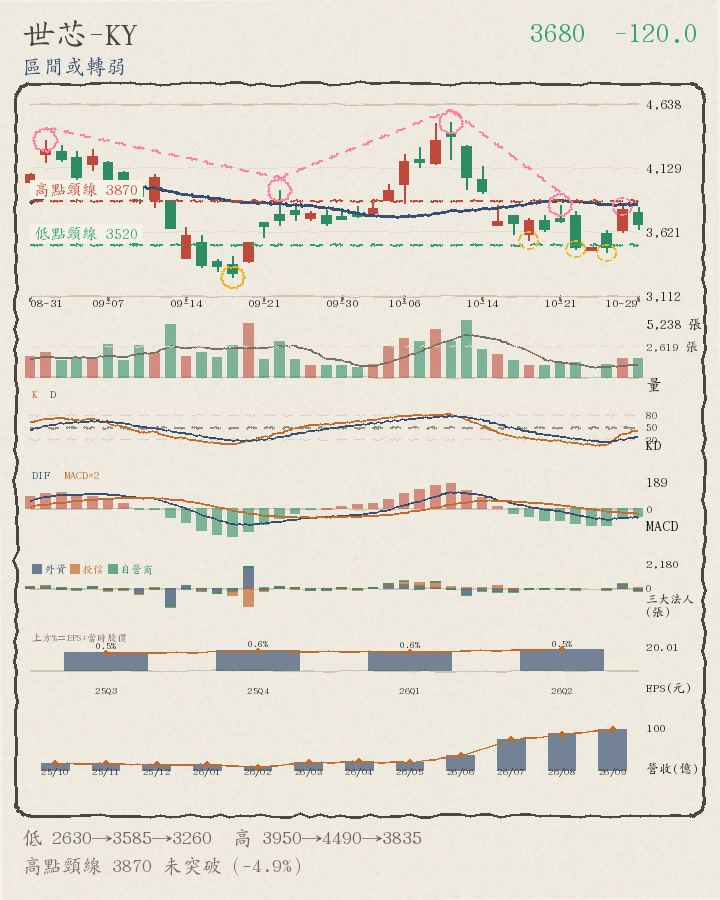
今天收黑、成交量也比平均少、跌破月線 3839.5，離高點頸線 3870 還差 4.9%，轉折還沒走出明顯方向。
- 月線位置：收盤 3680 在月線 3839.5 之下；5 日線 3593 也在月線之下（短均在下）；月線走平或向下、5 日線走平或向下
- 量能：成交量是 20 日均量的 0.79 倍，比 20 日均量少很多
- 關鍵價位：高點頸線 3870 還沒突破，差 4.9%；最近轉折高點 3835（低於 4.0%）；最近轉折低點 3260（高於 12.9%）
- 轉折結構：低點 2630、3585、3260 與高點 3950、4490、3835 都沒有明顯遞增，屬於區間震盪或轉弱；還沒確認的轉折低點 10-22 3485、10-27 3455；還沒確認的轉折高點 10-28 3825（圖上虛線小圈）
區間或轉弱 成交金額 58.94 億・全榜第 40 名（上市第 33 名）
好條件 0/7：無
不好條件 5/5：在月線之下、月線下彎、相對大盤弱、今日下跌、外資賣超
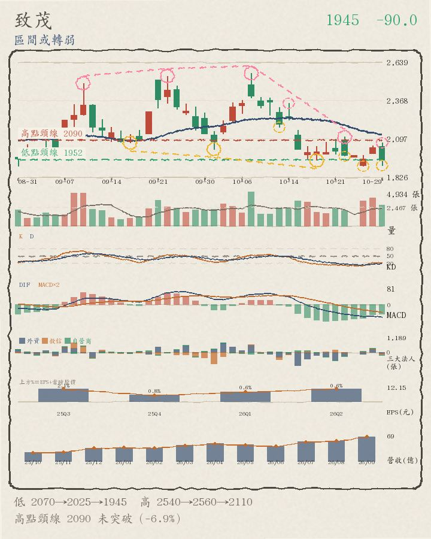
今天帶量收黑、跌破月線 2128，離高點頸線 2090 還差 6.9%，轉折還沒走出明顯方向。
- 月線位置：收盤 1945 在月線 2128 之下；5 日線 1979 也在月線之下（短均在下）；月線走平或向下、5 日線走平或向下
- 量能：成交量是 20 日均量的 1.10 倍，比 20 日均量大一些；收黑卻量增，量價背離
- 關鍵價位：高點頸線 2090 還沒突破，差 6.9%；最近轉折高點 2110（低於 7.8%）；最近轉折低點 1945（高於 0.0%）
- 轉折結構：低點 2070、2025、1945 與高點 2540、2560、2110 都沒有明顯遞增，屬於區間震盪或轉弱；還沒確認的轉折低點 10-27 1905、10-29 1910；還沒確認的轉折高點 10-14 2350、10-29 2070（圖上虛線小圈）
區間或轉弱 成交金額 58.82 億・全榜第 41 名（上市第 34 名）
好條件 0/7：無
不好條件 5/5：在月線之下、月線下彎、相對大盤弱、今日下跌、外資賣超
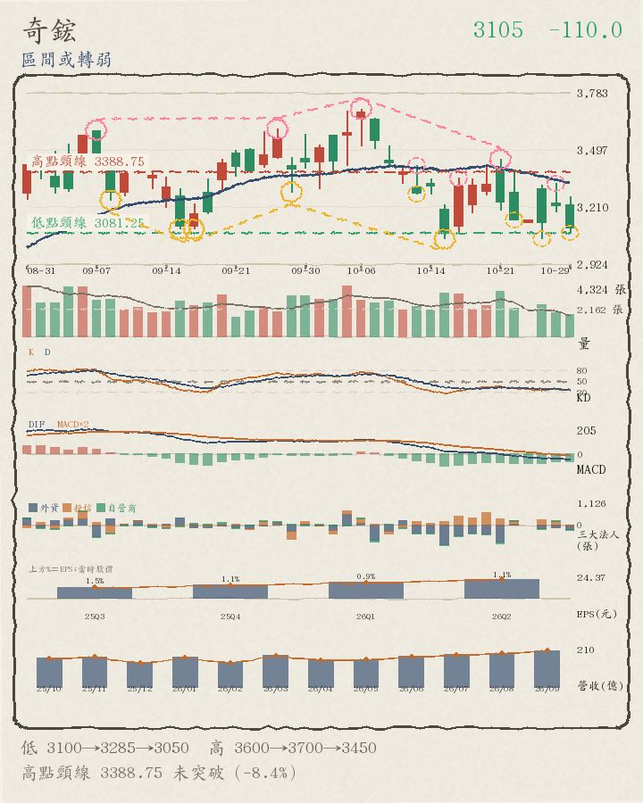
今天收黑、成交量也比平均少、跌破月線 3332，離高點頸線 3388.75 還差 8.4%，轉折還沒走出明顯方向。
- 月線位置：收盤 3105 在月線 3332 之下；5 日線 3148 也在月線之下（短均在下）；月線走平或向下、5 日線走平或向下
- 量能：成交量是 20 日均量的 0.63 倍，比 20 日均量少很多
- 關鍵價位：高點頸線 3388.75 還沒突破，差 8.4%；最近轉折高點 3450（低於 10.0%）；最近轉折低點 3050（高於 1.8%）
- 轉折結構：低點 3100、3285、3050 與高點 3600、3700、3450 都沒有明顯遞增，屬於區間震盪或轉弱；還沒確認的轉折低點 10-27 3050、10-29 3080；還沒確認的轉折高點 10-16 3355、10-28 3330（圖上虛線小圈）
底部墊高、突破前高 成交金額 56.43 億・全榜第 44 名（上市第 35 名）
好條件 7/7：站上月線、月線向上、底底高、頭頭高、突破頸線、外資買超、量價攻擊（收紅＋大量）
不好條件 0/5：無
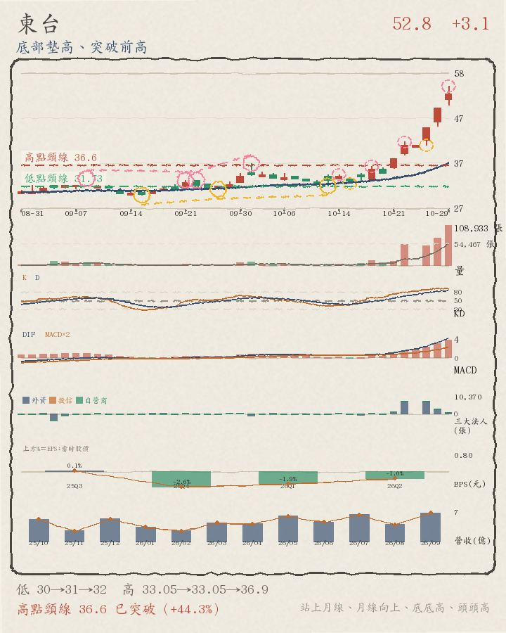
今天帶量收紅、站上月線 37.055，已站上高點頸線 36.6，轉折結構仍是底底高＋頭頭高。
- 月線位置：收盤 52.8 在月線 37.055 之上；5 日線 45.94 也在月線之上（短均在上）；月線向上、5 日線向上
- 量能：成交量是 20 日均量的 8.27 倍，比 20 日均量大不少；收紅又量增，量價配合
- 關鍵價位：高點頸線 36.6 已站上；最近轉折高點 36.9（高於 43.1%）；最近轉折低點 31.8（高於 66.0%）
- 轉折結構：低點 29.7、31.05、31.8 一路墊高 7.1%、高點 33.05、33.05、36.9 也一路墊高 48.0%，是底底高＋頭頭高；還沒確認的轉折低點 10-15 32.35、10-27 41.05；還沒確認的轉折高點 10-22 41.85、10-29 54.6（圖上虛線小圈）
區間或轉弱 成交金額 56.2 億・全榜第 45 名（上市第 36 名）
好條件 0/7：無
不好條件 5/5：在月線之下、月線下彎、相對大盤弱、今日下跌、外資賣超
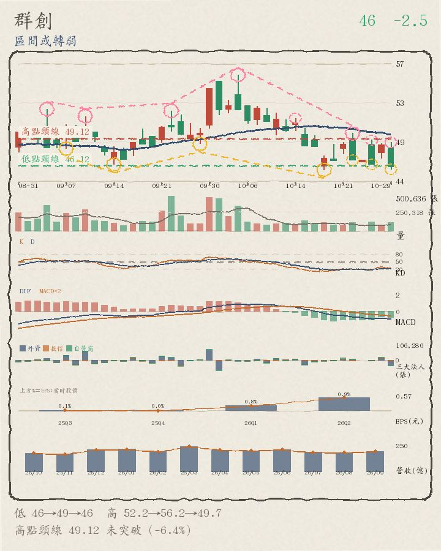
今天收黑、成交量也比平均少、跌破月線 49.595，離高點頸線 49.12 還差 6.4%，轉折還沒走出明顯方向。
- 月線位置：收盤 46 在月線 49.595 之下；5 日線 46.84 也在月線之下（短均在下）；月線走平或向下、5 日線走平或向下
- 量能：成交量是 20 日均量的 0.74 倍，比 20 日均量少很多
- 關鍵價位：高點頸線 49.12 還沒突破，差 6.4%；最近轉折高點 49.7（低於 7.4%）；最近轉折低點 45.65（高於 0.8%）
- 轉折結構：低點 46.25、48.55、45.65 與高點 52.2、56.2、49.7 都沒有明顯遞增，屬於區間震盪或轉弱；還沒確認的轉折低點 10-27 46.25、10-29 45.7；還沒確認的轉折高點 10-27 48.95、10-29 48.7（圖上虛線小圈）
區間或轉弱 成交金額 53.23 億・全榜第 46 名（上市第 37 名）
好條件 2/7：站上月線、外資買超
不好條件 2/5：月線下彎、今日下跌
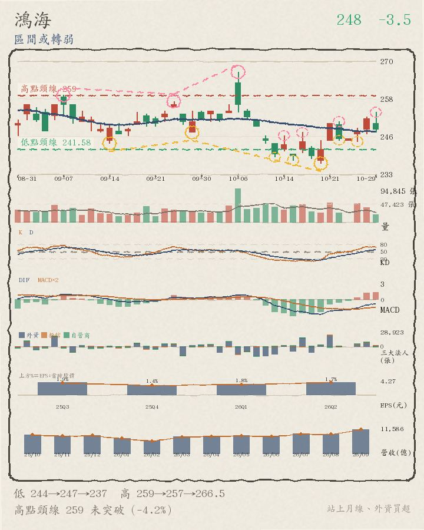
今天收黑、成交量也比平均少、站上月線 247.325，離高點頸線 259 還差 4.2%，轉折還沒走出明顯方向。
- 月線位置：收盤 248 在月線 247.325 之上；5 日線 247.4 也在月線之上（短均在上）；月線走平或向下、5 日線向上
- 量能：成交量是 20 日均量的 0.52 倍，比 20 日均量少很多
- 關鍵價位：高點頸線 259 還沒突破，差 4.2%；最近轉折高點 266.5（低於 6.9%）；最近轉折低點 237（高於 4.6%）
- 轉折結構：低點 243.5、247、237 與高點 259、257、266.5 都沒有明顯遞增，屬於區間震盪或轉弱；還沒確認的轉折低點 10-22 244.5、10-27 244；還沒確認的轉折高點 10-22 250.5、10-29 253.5（圖上虛線小圈）
貿聯-KY 3665 上市
1705 -105.0
區間或轉弱 成交金額 53.08 億・全榜第 47 名（上市第 38 名）
好條件 1/7：外資買超
不好條件 4/5：在月線之下、月線下彎、相對大盤弱、今日下跌
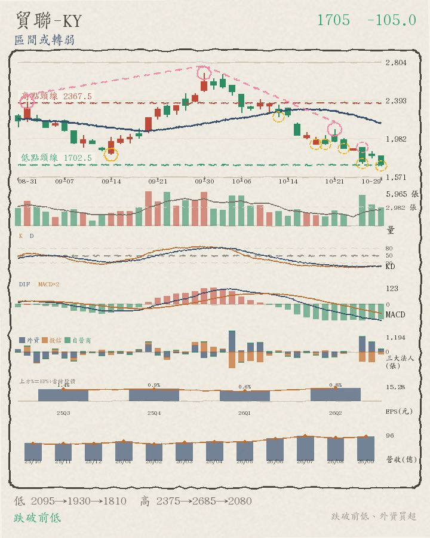
今天收黑、跌破月線 2145.25，跌破前一個轉折低點（高點頸線 2367.5 還在收盤上方），轉折還沒走出明顯方向。
- 月線位置：收盤 1705 在月線 2145.25 之下；5 日線 1800 也在月線之下（短均在下）；月線走平或向下、5 日線走平或向下
- 量能：成交量是 20 日均量的 0.97 倍，跟 20 日均量差不多
- 關鍵價位：高點頸線 2367.5 還沒突破、還在收盤上方 28.0%；最近轉折高點 2080（低於 18.0%）；最近轉折低點 1810（低於 5.8%）
- 轉折結構：低點 2095、1930、1810 與高點 2375、2685、2080 都沒有明顯遞增，屬於區間震盪或轉弱；還沒確認的轉折低點 10-27 1715、10-29 1690；還沒確認的轉折高點 10-27 1890（圖上虛線小圈）
區間或轉弱 成交金額 52.95 億・全榜第 48 名（上市第 39 名）
好條件 1/7：外資買超
不好條件 2/5：在月線之下、月線下彎
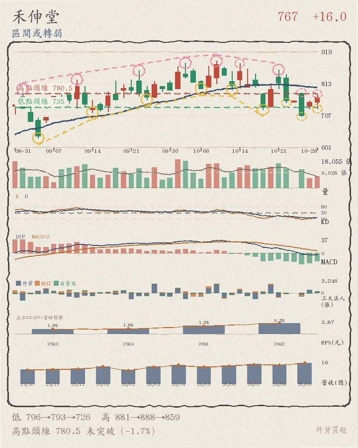
今天收紅、但成交量比平均少、跌破月線 800.2，離高點頸線 780.5 還差 1.7%，轉折還沒走出明顯方向。
- 月線位置：收盤 767 在月線 800.2 之下；5 日線 747.2 也在月線之下（短均在下）；月線走平或向下、5 日線走平或向下
- 量能：成交量是 20 日均量的 0.62 倍，比 20 日均量少很多；收紅但量縮，量價背離
- 關鍵價位：高點頸線 780.5 還沒突破，差 1.7%；最近轉折高點 859（低於 10.7%）；最近轉折低點 726（高於 5.6%）
- 轉折結構：低點 796、793、726 與高點 881、888、859 都沒有明顯遞增，屬於區間震盪或轉弱；還沒確認的轉折低點 10-27 704、10-29 729；還沒確認的轉折高點 10-27 783、10-29 778（圖上虛線小圈）
GIS-KY 6456 上市
102.5 -5.0
剛突破前高 成交金額 52.9 億・全榜第 49 名（上市第 40 名）
好條件 3/7：站上月線、月線向上、頭頭高
不好條件 3/5：相對大盤弱、今日下跌、外資賣超
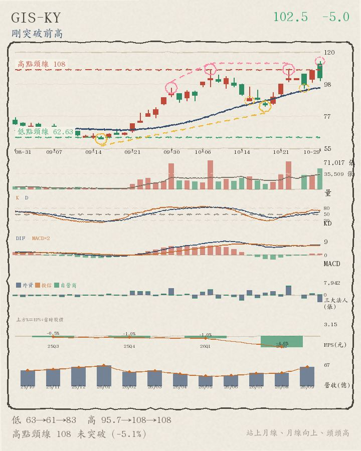
今天帶量收黑、站上月線 95.825，離高點頸線 108 還差 5.1%，高點還在墊高（但底部沒同步墊高）。
- 月線位置：收盤 102.5 在月線 95.825 之上；5 日線 102.36 也在月線之上（短均在上）；月線向上、5 日線向上
- 量能：成交量是 20 日均量的 1.69 倍，比 20 日均量大不少；收黑卻量增，量價背離
- 關鍵價位：高點頸線 108 還沒突破，差 5.1%；最近轉折高點 108（低於 5.1%）；最近轉折低點 83.3（高於 23.0%）
- 轉折結構：高點 95.7、108、108 墊高 5.1%（頭頭高），但低點 62.9、61.4、83.3 沒有同步墊高；還沒確認的轉折低點 10-15 87.1、10-27 95.5；還沒確認的轉折高點 10-29 113.5（圖上虛線小圈）
區間或轉弱 成交金額 50.79 億・全榜第 50 名（上市第 41 名）
好條件 1/7：外資買超
不好條件 4/5：在月線之下、月線下彎、相對大盤弱、今日下跌
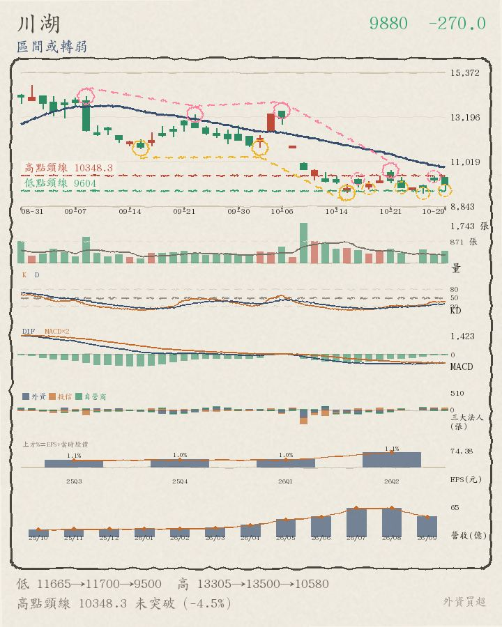
今天收黑、成交量也比平均少、跌破月線 10733.2，離高點頸線 10348.3 還差 4.5%，轉折還沒走出明顯方向。
- 月線位置：收盤 9880 在月線 10733.2 之下；5 日線 9870 也在月線之下（短均在下）；月線走平或向下、5 日線走平或向下
- 量能：成交量是 20 日均量的 0.90 倍，比 20 日均量少一些
- 關鍵價位：高點頸線 10348.3 還沒突破，差 4.5%；最近轉折高點 10580（低於 6.6%）；最近轉折低點 9500（高於 4.0%）
- 轉折結構：低點 11665、11700、9500 與高點 13305、13500、10580 都沒有明顯遞增，屬於區間震盪或轉弱；還沒確認的轉折低點 10-27 9475、10-29 9600；還沒確認的轉折高點 10-16 10175、10-28 10290（圖上虛線小圈）
高點墊高、底部不穩 成交金額 47.48 億・全榜第 53 名（上市第 42 名）
好條件 3/7：站上月線、月線向上、頭頭高
不好條件 3/5：相對大盤弱、今日下跌、外資賣超
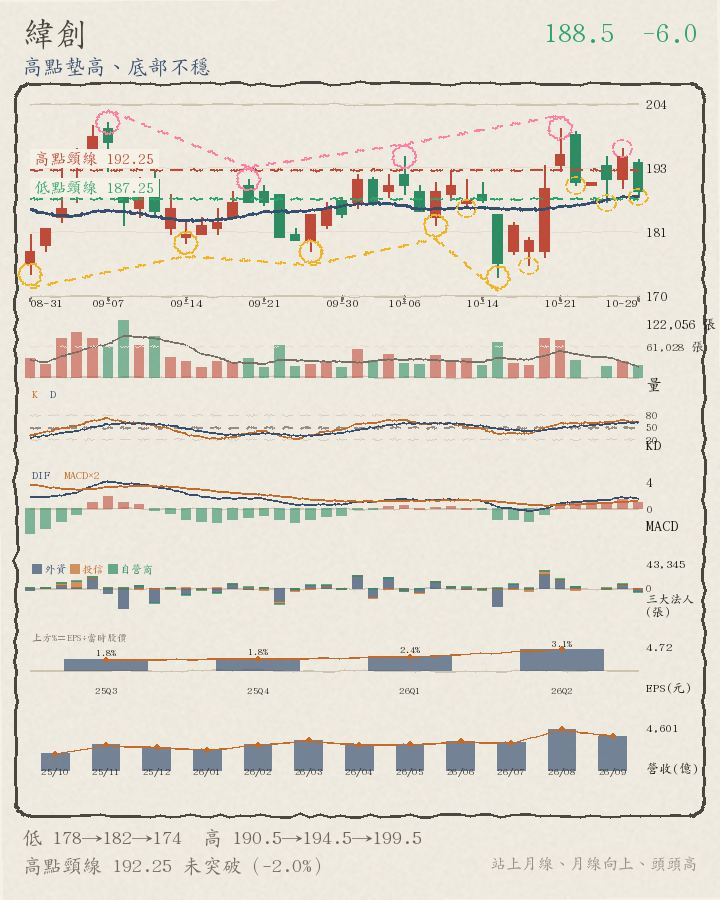
今天收黑、成交量也比平均少、站上月線 187.675，離高點頸線 192.25 還差 2.0%，高點還在墊高（但底部沒同步墊高）。
- 月線位置：收盤 188.5 在月線 187.675 之上；5 日線 190.7 也在月線之上（短均在上）；月線向上、5 日線向上
- 量能：成交量是 20 日均量的 0.62 倍，比 20 日均量少很多
- 關鍵價位：高點頸線 192.25 還沒突破，差 2.0%；最近轉折高點 199.5（低於 5.5%）；最近轉折低點 173.5（高於 8.6%）
- 轉折結構：高點 190.5、194.5、199.5 墊高 4.7%（頭頭高），但低點 178、182.5、173.5 沒有同步墊高；還沒確認的轉折低點 10-27 186.5、10-29 187.5；還沒確認的轉折高點 10-28 196（圖上虛線小圈）
區間或轉弱 成交金額 44.32 億・全榜第 54 名（上市第 43 名）
好條件 1/7：月線向上
不好條件 4/5：在月線之下、相對大盤弱、今日下跌、外資賣超
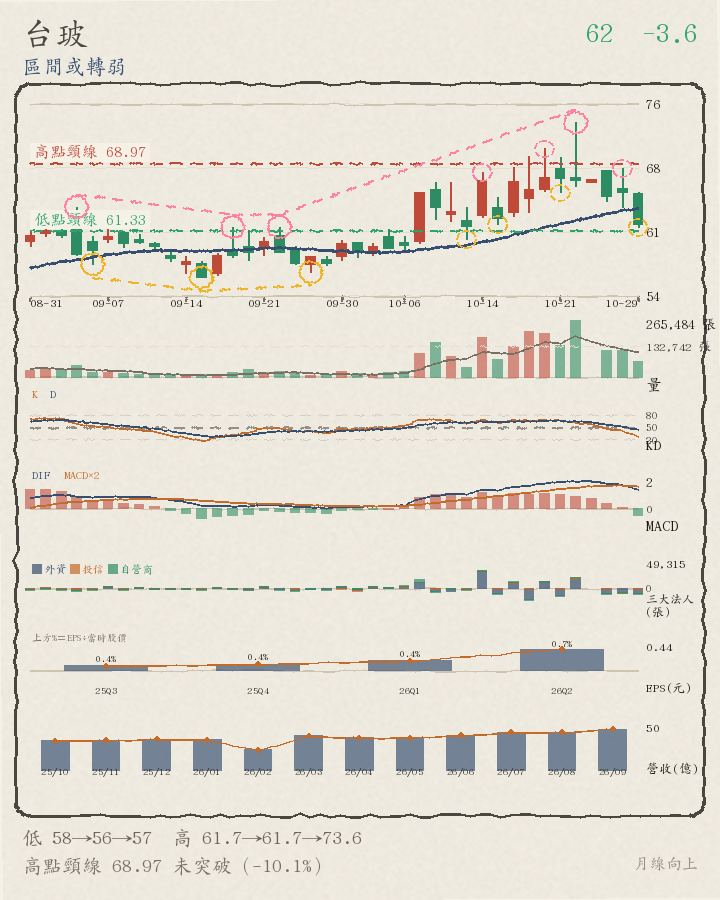
今天收黑、成交量也比平均少、跌破月線 63.82，離高點頸線 68.97 還差 10.1%，轉折還沒走出明顯方向。
- 月線位置：收盤 62 在月線 63.82 之下；5 日線 65.4 也在月線之上（短均在上）；月線向上、5 日線走平或向下
- 量能：成交量是 20 日均量的 0.67 倍，比 20 日均量少很多
- 關鍵價位：高點頸線 68.97 還沒突破，差 10.1%；最近轉折高點 73.6（低於 15.8%）；最近轉折低點 56.6（高於 9.5%）
- 轉折結構：低點 57.5、56、56.6 與高點 61.7、61.7、73.6 都沒有明顯遞增，屬於區間震盪或轉弱；還沒確認的轉折低點 10-21 65.6、10-29 61.7；還沒確認的轉折高點 10-20 70.6、10-28 68.4（圖上虛線小圈）
底部墊高、未過前高 成交金額 43.94 億・全榜第 55 名（上市第 44 名）
好條件 4/7：站上月線、底底高、外資買超、量價攻擊（收紅＋大量）
不好條件 1/5：月線下彎
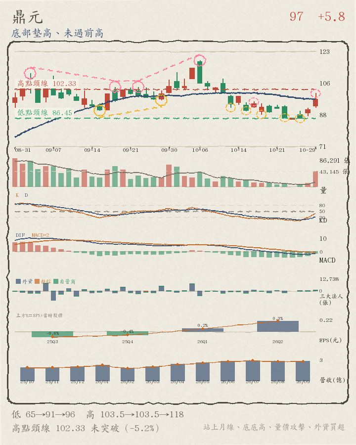
今天帶量收紅、站上月線 96.895，離高點頸線 102.33 還差 5.2%，底部還在墊高（但高點沒同步創高）。
- 月線位置：收盤 97 在月線 96.895 之上；5 日線 89.58 也在月線之下（短均在下）；月線走平或向下、5 日線走平或向下
- 量能：成交量是 20 日均量的 1.95 倍，比 20 日均量大不少；收紅又量增，量價配合
- 關鍵價位：高點頸線 102.33 還沒突破，差 5.2%；最近轉折高點 118（低於 17.8%）；最近轉折低點 96.3（高於 0.7%）
- 轉折結構：低點 65.2、90.6、96.3 墊高 47.7%（底底高），但高點 103.5、103.5、118 沒有同步創高；還沒確認的轉折低點 10-22 86.7、10-27 86.2；還沒確認的轉折高點 10-16 95.4、10-29 100（圖上虛線小圈）
區間或轉弱 成交金額 43.89 億・全榜第 56 名（上市第 45 名）
好條件 0/7：無
不好條件 5/5：在月線之下、月線下彎、相對大盤弱、今日下跌、外資賣超
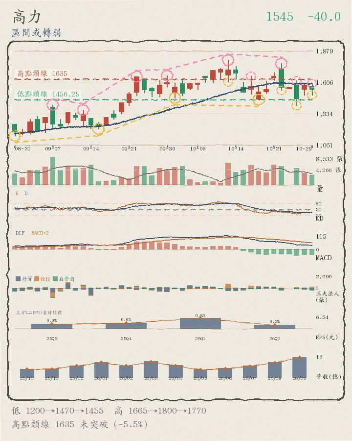
今天收黑、成交量也比平均少、跌破月線 1594.25，離高點頸線 1635 還差 5.5%，轉折還沒走出明顯方向。
- 月線位置：收盤 1545 在月線 1594.25 之下；5 日線 1543 也在月線之下（短均在下）；月線走平或向下、5 日線走平或向下
- 量能：成交量是 20 日均量的 0.73 倍，比 20 日均量少很多
- 關鍵價位：高點頸線 1635 還沒突破，差 5.5%；最近轉折高點 1770（低於 12.7%）；最近轉折低點 1455（高於 6.2%）
- 轉折結構：低點 1200、1470、1455 與高點 1665、1800、1770 都沒有明顯遞增，屬於區間震盪或轉弱；還沒確認的轉折低點 10-27 1405、10-29 1495；還沒確認的轉折高點 10-27 1620、10-29 1595（圖上虛線小圈）
區間或轉弱 成交金額 40.16 億・全榜第 57 名（上市第 46 名）
好條件 2/7：月線向上、外資買超
不好條件 3/5：在月線之下、相對大盤弱、今日下跌
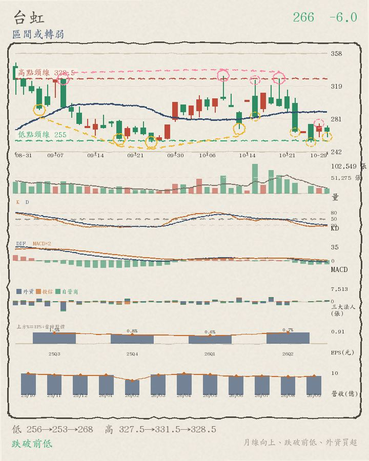
今天收黑、成交量也比平均少、跌破月線 288.85，跌破前一個轉折低點（高點頸線 328.5 還在收盤上方），轉折還沒走出明顯方向。
- 月線位置：收盤 266 在月線 288.85 之下；5 日線 265.1 也在月線之下（短均在下）；月線向上、5 日線走平或向下
- 量能：成交量是 20 日均量的 0.42 倍，比 20 日均量少很多
- 關鍵價位：高點頸線 328.5 還沒突破、還在收盤上方 19.0%；最近轉折高點 328.5（低於 19.0%）；最近轉折低點 268.5（低於 0.9%）
- 轉折結構：低點 256.5、253、268.5 與高點 327.5、331.5、328.5 都沒有明顯遞增，屬於區間震盪或轉弱；還沒確認的轉折低點 10-27 253、10-29 259；還沒確認的轉折高點 10-15 326.5、10-28 275（圖上虛線小圈）
剛突破前高 成交金額 39.54 億・全榜第 58 名（上市第 47 名）
好條件 1/7：頭頭高
不好條件 5/5：在月線之下、月線下彎、相對大盤弱、今日下跌、外資賣超
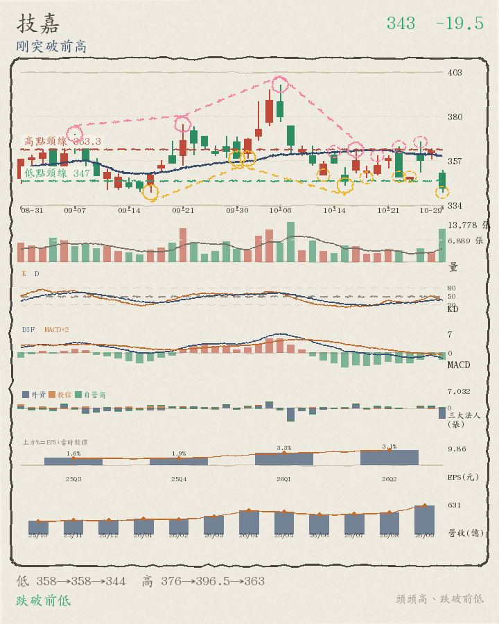
今天帶量收黑、跌破月線 359.8，跌破前一個轉折低點（高點頸線 363.3 還在收盤上方），高點還在墊高（但底部沒同步墊高）。
- 月線位置：收盤 343 在月線 359.8 之下；5 日線 352.2 也在月線之下（短均在下）；月線走平或向下、5 日線走平或向下
- 量能：成交量是 20 日均量的 2.05 倍，比 20 日均量大不少；收黑卻量增，量價背離
- 關鍵價位：高點頸線 363.3 還沒突破、還在收盤上方 5.6%；最近轉折高點 363（低於 5.5%）；最近轉折低點 344.5（低於 0.4%）
- 轉折結構：高點 376、396.5、363 墊高 1.1%（頭頭高），但低點 358.5、358.5、344.5 沒有同步墊高；還沒確認的轉折低點 10-23 349、10-29 341；還沒確認的轉折高點 10-22 364.5、10-27 367（圖上虛線小圈）
剛突破前高 成交金額 38.1 億・全榜第 62 名（上市第 48 名）
好條件 1/7：頭頭高
不好條件 5/5：在月線之下、月線下彎、相對大盤弱、今日下跌、外資賣超
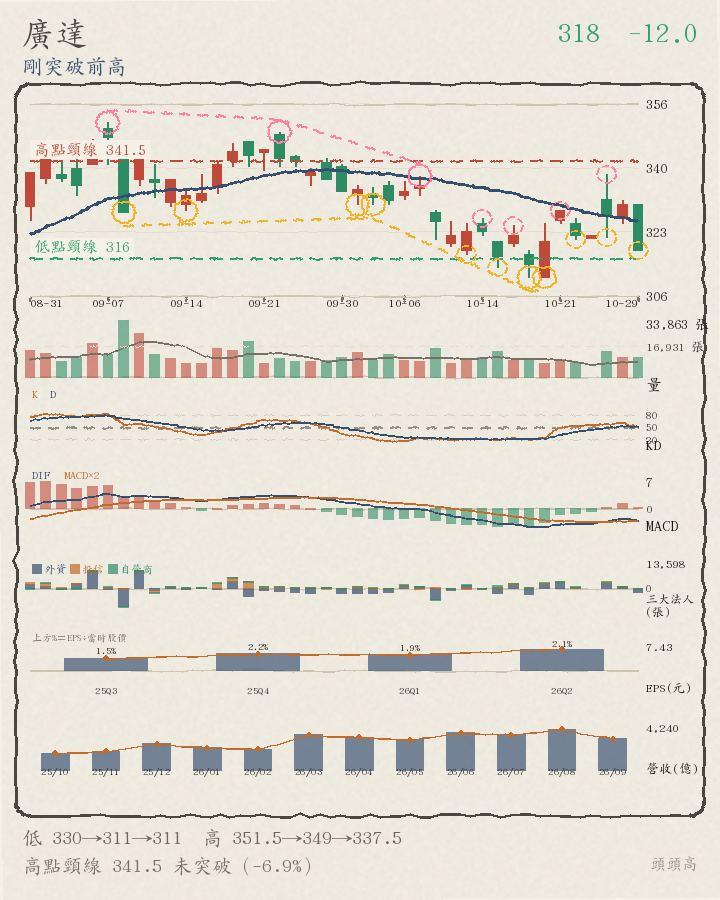
今天帶量收黑、跌破月線 325.7，離高點頸線 341.5 還差 6.9%，高點還在墊高（但底部沒同步墊高）。
- 月線位置：收盤 318 在月線 325.7 之下；5 日線 323.9 也在月線之下（短均在下）；月線走平或向下、5 日線向上
- 量能：成交量是 20 日均量的 1.05 倍，比 20 日均量大一些；收黑卻量增，量價背離
- 關鍵價位：高點頸線 341.5 還沒突破，差 6.9%；最近轉折高點 337.5（低於 5.8%）；最近轉折低點 311（高於 2.3%）
- 轉折結構：高點 351.5、349、337.5 墊高 0.1%（頭頭高），但低點 330、311、311 沒有同步墊高；還沒確認的轉折低點 10-27 321.5、10-29 318；還沒確認的轉折高點 10-21 328.5、10-27 338（圖上虛線小圈）
區間或轉弱 成交金額 37.98 億・全榜第 63 名（上市第 49 名）
好條件 1/7：外資買超
不好條件 4/5：在月線之下、月線下彎、相對大盤弱、今日下跌
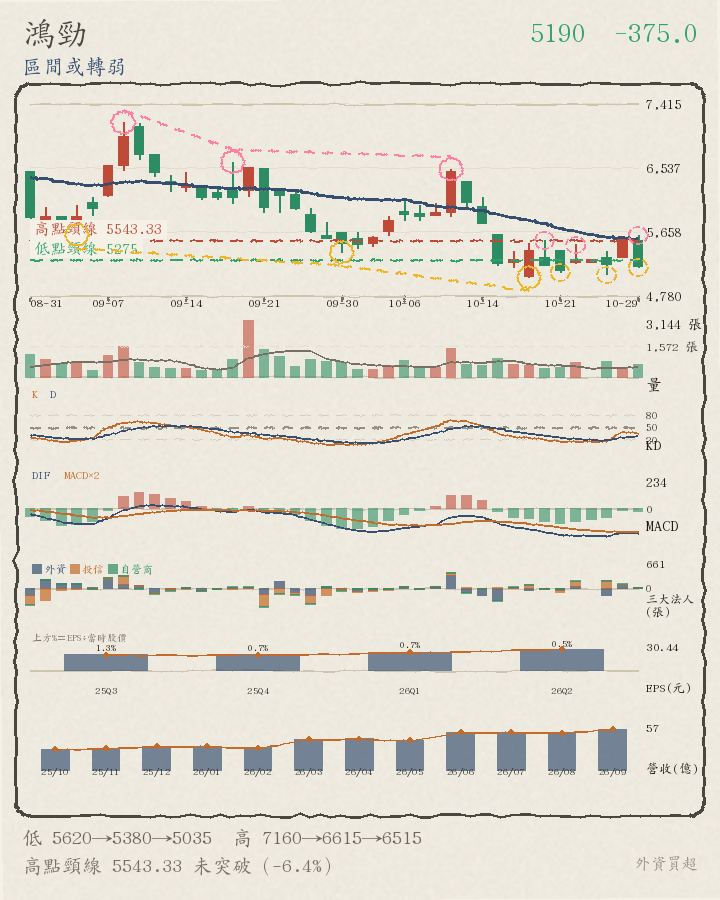
今天收黑、跌破月線 5560.25，離高點頸線 5543.33 還差 6.4%，轉折還沒走出明顯方向。
- 月線位置：收盤 5190 在月線 5560.25 之下；5 日線 5303 也在月線之下（短均在下）；月線走平或向下、5 日線向上
- 量能：成交量是 20 日均量的 1.01 倍，跟 20 日均量差不多
- 關鍵價位：高點頸線 5543.33 還沒突破，差 6.4%；最近轉折高點 6515（低於 20.3%）；最近轉折低點 5035（高於 3.1%）
- 轉折結構：低點 5620、5380、5035 與高點 7160、6615、6515 都沒有明顯遞增，屬於區間震盪或轉弱；還沒確認的轉折低點 10-27 5070、10-29 5170；還沒確認的轉折高點 10-22 5480、10-29 5610（圖上虛線小圈）
上升趨勢（底底高＋頭頭高） 成交金額 37.67 億・全榜第 64 名（上市第 50 名）
好條件 2/7：底底高、頭頭高
不好條件 5/5：在月線之下、月線下彎、相對大盤弱、今日下跌、外資賣超
今天收黑、成交量也比平均少、跌破月線 236.4，跌破前一個轉折低點（高點頸線 232 還在收盤上方），轉折結構仍是底底高＋頭頭高。
- 月線位置：收盤 213.5 在月線 236.4 之下；5 日線 220.5 也在月線之下（短均在下）；月線走平或向下、5 日線走平或向下
- 量能：成交量是 20 日均量的 0.52 倍，比 20 日均量少很多
- 關鍵價位：高點頸線 232 還沒突破、還在收盤上方 8.0%；最近轉折高點 266（低於 19.7%）；最近轉折低點 228（低於 6.4%）
- 轉折結構：低點 213、219、228 一路墊高 7.0%、高點 235、261、266 也一路墊高 13.2%，是底底高＋頭頭高；還沒確認的轉折低點 10-27 215、10-29 212.5；還沒確認的轉折高點 10-14 252.5、10-27 229（圖上虛線小圈）
區間或轉弱 成交金額 334.33 億・全榜第 3 名（上櫃第 1 名）
好條件 5/7：站上月線、月線向上、突破頸線、外資買超、量價攻擊（收紅＋大量）
不好條件 0/5：無
今天帶量收紅、站上月線 540.45，已站上高點頸線 485，轉折還沒走出明顯方向。
- 月線位置：收盤 594 在月線 540.45 之上；5 日線 519.4 也在月線之下（短均在下）；月線向上、5 日線向上
- 量能：成交量是 20 日均量的 2.63 倍，比 20 日均量大不少；收紅又量增，量價配合
- 關鍵價位：高點頸線 485 已站上；最近轉折高點 630（低於 5.7%）；最近轉折低點 454（高於 30.8%）
- 轉折結構：低點 420、482、454 與高點 492、478、630 都沒有明顯遞增，屬於區間震盪或轉弱；還沒確認的轉折低點 10-22 482、10-27 479；還沒確認的轉折高點 10-22 526、10-29 594（圖上虛線小圈）
底部墊高、未過前高 成交金額 158.02 億・全榜第 14 名（上櫃第 2 名）
好條件 3/7：站上月線、月線向上、底底高
不好條件 3/5：相對大盤弱、今日下跌、外資賣超
今天帶量收黑、站上月線 134.275，底部還在墊高（但高點沒同步創高）。
- 月線位置：收盤 137 在月線 134.275 之上；5 日線 138 也在月線之上（短均在上）；月線向上、5 日線走平或向下
- 量能：成交量是 20 日均量的 1.23 倍，比 20 日均量大不少；收黑卻量增，量價背離
- 關鍵價位：最近轉折高點 161.5（低於 15.2%）；最近轉折低點 124（高於 10.5%）
- 轉折結構：低點 111、113、124 墊高 11.7%（底底高），但高點 135、129.5、161.5 沒有同步創高；還沒確認的轉折低點 10-22 137、10-27 128.5；還沒確認的轉折高點 10-14 140.5、10-29 149（圖上虛線小圈）
高點墊高、底部不穩 成交金額 138.75 億・全榜第 18 名（上櫃第 3 名）
好條件 2/7：頭頭高、外資買超
不好條件 2/5：在月線之下、月線下彎
今天收紅、跌破月線 1580，離高點頸線 1453.33 還差 4.4%，高點還在墊高（但底部沒同步墊高）。
- 月線位置：收盤 1390 在月線 1580 之下；5 日線 1377 也在月線之下（短均在下）；月線走平或向下、5 日線走平或向下
- 量能：成交量是 20 日均量的 0.96 倍，跟 20 日均量差不多
- 關鍵價位：高點頸線 1453.33 還沒突破，差 4.4%；最近轉折高點 1835（低於 24.3%）；最近轉折低點 1275（高於 9.0%）
- 轉折結構：高點 1430、1460、1835 墊高 28.3%（頭頭高），但低點 1395、1295、1275 沒有同步墊高；還沒確認的轉折低點 10-22 1410、10-27 1280；還沒確認的轉折高點 10-27 1450、10-29 1450（圖上虛線小圈）
高點墊高、底部不穩 成交金額 123.95 億・全榜第 20 名（上櫃第 4 名）
好條件 1/7：頭頭高
不好條件 4/5：在月線之下、月線下彎、今日下跌、外資賣超
今天帶量收黑、跌破月線 2710.25，離高點頸線 2931.67 還差 12.2%，高點還在墊高（但底部沒同步墊高）。
- 月線位置：收盤 2575 在月線 2710.25 之下；5 日線 2481 也在月線之下（短均在下）；月線走平或向下、5 日線走平或向下
- 量能：成交量是 20 日均量的 1.60 倍，比 20 日均量大不少；收黑卻量增，量價背離
- 關鍵價位：高點頸線 2931.67 還沒突破，差 12.2%；最近轉折高點 3210（低於 19.8%）；最近轉折低點 2365（高於 8.9%）
- 轉折結構：高點 2930、2950、3210 墊高 9.6%（頭頭高），但低點 2650、2585、2365 沒有同步墊高；還沒確認的轉折低點 10-19 2385；還沒確認的轉折高點 10-21 2640、10-29 2795（圖上虛線小圈）
區間或轉弱 成交金額 91.56 億・全榜第 23 名（上櫃第 5 名）
好條件 2/7：站上月線、月線向上
不好條件 3/5：相對大盤弱、今日下跌、外資賣超
今天帶量收黑、站上月線 470.225，離高點頸線 503.75 還差 3.2%，轉折還沒走出明顯方向。
- 月線位置：收盤 487.5 在月線 470.225 之上；5 日線 475.6 也在月線之上（短均在上）；月線向上、5 日線向上
- 量能：成交量是 20 日均量的 1.71 倍，比 20 日均量大不少；收黑卻量增，量價背離
- 關鍵價位：高點頸線 503.75 還沒突破，差 3.2%；最近轉折高點 530（低於 8.0%）；最近轉折低點 399（高於 22.2%）
- 轉折結構：低點 407、436.5、399 與高點 496、487、530 都沒有明顯遞增，屬於區間震盪或轉弱；還沒確認的轉折低點 10-13 444、10-27 456；還沒確認的轉折高點 10-27 509、10-29 513（圖上虛線小圈）
區間或轉弱 成交金額 80.3 億・全榜第 30 名（上櫃第 6 名）
好條件 3/7：站上月線、外資買超、量價攻擊（收紅＋大量）
不好條件 1/5：月線下彎
今天帶量收紅、站上月線 1456.5，離高點頸線 1511.67 還差 3.1%，轉折還沒走出明顯方向。
- 月線位置：收盤 1465 在月線 1456.5 之上；5 日線 1391 也在月線之下（短均在下）；月線走平或向下、5 日線走平或向下
- 量能：成交量是 20 日均量的 1.68 倍，比 20 日均量大不少；收紅又量增，量價配合
- 關鍵價位：高點頸線 1511.67 還沒突破，差 3.1%；最近轉折高點 1515（低於 3.3%）；最近轉折低點 1320（高於 11.0%）
- 轉折結構：低點 1480、1395、1320 與高點 1505、1750、1515 都沒有明顯遞增，屬於區間震盪或轉弱；還沒確認的轉折低點 10-22 1335、10-27 1310；還沒確認的轉折高點 10-29 1515（圖上虛線小圈）
剛突破前高 成交金額 75.11 億・全榜第 32 名（上櫃第 7 名）
好條件 1/7：頭頭高
不好條件 5/5：在月線之下、月線下彎、相對大盤弱、今日下跌、外資賣超
今天帶量收黑、跌破月線 215.725，離高點頸線 220 還差 7.7%，高點還在墊高（但底部沒同步墊高）。
- 月線位置：收盤 203 在月線 215.725 之下；5 日線 207.7 也在月線之下（短均在下）；月線走平或向下、5 日線走平或向下
- 量能：成交量是 20 日均量的 1.20 倍，比 20 日均量大不少；收黑卻量增，量價背離
- 關鍵價位：高點頸線 220 還沒突破，差 7.7%；最近轉折高點 217（低於 6.5%）；最近轉折低點 194.5（高於 4.4%）
- 轉折結構：高點 238、238、217 墊高 2.8%（頭頭高），但低點 208、211、194.5 沒有同步墊高；還沒確認的轉折低點 10-27 199.5、10-29 200.5；還沒確認的轉折高點 10-14 233、10-28 223（圖上虛線小圈）
區間或轉弱 成交金額 58.52 億・全榜第 42 名（上櫃第 8 名）
好條件 3/7：站上月線、外資買超、量價攻擊（收紅＋大量）
不好條件 1/5：月線下彎
今天帶量收紅、站上月線 1987.5，離高點頸線 2125 還差 3.5%，轉折還沒走出明顯方向。
- 月線位置：收盤 2050 在月線 1987.5 之上；5 日線 1952 也在月線之下（短均在下）；月線走平或向下、5 日線向上
- 量能：成交量是 20 日均量的 1.30 倍，比 20 日均量大不少；收紅又量增，量價配合
- 關鍵價位：高點頸線 2125 還沒突破，差 3.5%；最近轉折高點 2350（低於 12.8%）；最近轉折低點 1785（高於 14.8%）
- 轉折結構：低點 1900、2080、1785 與高點 2195、2160、2350 都沒有明顯遞增，屬於區間震盪或轉弱；還沒確認的轉折低點 10-22 1870、10-27 1865；還沒確認的轉折高點 10-22 1945、10-29 2090（圖上虛線小圈）
區間或轉弱 成交金額 57.52 億・全榜第 43 名（上櫃第 9 名）
好條件 0/7：無
不好條件 5/5：在月線之下、月線下彎、相對大盤弱、今日下跌、外資賣超
今天收黑、成交量也比平均少、跌破月線 987.5，跌破前一個轉折低點（高點頸線 1013.33 還在收盤上方），轉折還沒走出明顯方向。
- 月線位置：收盤 814 在月線 987.5 之下；5 日線 825.8 也在月線之下（短均在下）；月線走平或向下、5 日線走平或向下
- 量能：成交量是 20 日均量的 0.57 倍，比 20 日均量少很多
- 關鍵價位：高點頸線 1013.33 還沒突破、還在收盤上方 19.7%；最近轉折高點 1260（低於 35.4%）；最近轉折低點 872（低於 6.7%）
- 轉折結構：低點 931、875、872 與高點 1015、1010、1260 都沒有明顯遞增，屬於區間震盪或轉弱；還沒確認的轉折低點 10-27 807、10-29 803；還沒確認的轉折高點 10-21 903、10-28 860（圖上虛線小圈）
區間或轉弱 成交金額 49.76 億・全榜第 51 名（上櫃第 10 名）
好條件 1/7：站上月線
不好條件 3/5：月線下彎、今日下跌、外資賣超
今天帶量收黑、站上月線 356.9，離高點頸線 382 還差 5.2%，轉折還沒走出明顯方向。
- 月線位置：收盤 362 在月線 356.9 之上；5 日線 342.4 也在月線之下（短均在下）；月線走平或向下、5 日線走平或向下
- 量能：成交量是 20 日均量的 3.02 倍，比 20 日均量大不少；收黑卻量增，量價背離
- 關鍵價位：高點頸線 382 還沒突破，差 5.2%；最近轉折高點 385.5（低於 6.1%）；最近轉折低點 328（高於 10.4%）
- 轉折結構：低點 373.5、327、328 與高點 428、405.5、385.5 都沒有明顯遞增，屬於區間震盪或轉弱；還沒確認的轉折低點 10-22 328、10-27 328；還沒確認的轉折高點 10-16 367、10-29 378.5（圖上虛線小圈）
區間或轉弱 成交金額 48.56 億・全榜第 52 名（上櫃第 11 名）
好條件 0/7：無
不好條件 5/5：在月線之下、月線下彎、相對大盤弱、今日下跌、外資賣超
今天帶量收黑、跌破月線 3110，離高點頸線 3293 還差 12.5%，轉折還沒走出明顯方向。
- 月線位置：收盤 2880 在月線 3110 之下；5 日線 3024 也在月線之下（短均在下）；月線走平或向下、5 日線走平或向下
- 量能：成交量是 20 日均量的 2.19 倍，比 20 日均量大不少；收黑卻量增，量價背離
- 關鍵價位：高點頸線 3293 還沒突破，差 12.5%；最近轉折高點 3345（低於 13.9%）；最近轉折低點 2825（高於 1.9%）
- 轉折結構：低點 2960、3000、2825 與高點 3775、3580、3345 都沒有明顯遞增，屬於區間震盪或轉弱；還沒確認的轉折低點 10-27 2900、10-29 2880；還沒確認的轉折高點 10-27 3225、10-29 3200（圖上虛線小圈）
區間或轉弱 成交金額 39.29 億・全榜第 59 名（上櫃第 12 名）
好條件 3/7：站上月線、外資買超、量價攻擊（收紅＋大量）
不好條件 1/5：月線下彎
今天收紅、站上月線 297.261，離高點頸線 305.04 還差 2.3%，轉折還沒走出明顯方向。
- 月線位置：收盤 298 在月線 297.261 之上；5 日線 290.3 也在月線之下（短均在下）；月線走平或向下、5 日線向上
- 量能：成交量是 20 日均量的 1.04 倍，跟 20 日均量差不多
- 關鍵價位：高點頸線 305.04 還沒突破，差 2.3%；最近轉折高點 312.5（低於 4.6%）；最近轉折低點 248（高於 20.2%）
- 轉折結構：低點 302.128、302.128、248 與高點 302.128、302.128、312.5 都沒有明顯遞增，屬於區間震盪或轉弱；還沒確認的轉折低點 10-27 274.5、10-29 279.5；還沒確認的轉折高點 10-27 309.5、10-29 306（圖上虛線小圈）
區間或轉弱 成交金額 39.16 億・全榜第 60 名（上櫃第 13 名）
好條件 1/7：突破頸線
不好條件 5/5：在月線之下、月線下彎、相對大盤弱、今日下跌、外資賣超
今天收黑、成交量也比平均少、跌破月線 17302.2，已站上高點頸線 16810，轉折還沒走出明顯方向。
- 月線位置：收盤 16980 在月線 17302.2 之下；5 日線 16462 也在月線之下（短均在下）；月線走平或向下、5 日線向上
- 量能：成交量是 20 日均量的 0.82 倍，比 20 日均量少很多
- 關鍵價位：高點頸線 16810 已站上；最近轉折高點 18465（低於 8.0%）；最近轉折低點 15500（高於 9.5%）
- 轉折結構：低點 17170、15975、15500 與高點 21800、19895、18465 都沒有明顯遞增，屬於區間震盪或轉弱；還沒確認的轉折低點 10-22 15800、10-27 15800；還沒確認的轉折高點 10-22 17000、10-29 17490（圖上虛線小圈）
區間或轉弱 成交金額 38.5 億・全榜第 61 名（上櫃第 14 名）
好條件 0/7：無
不好條件 5/5：在月線之下、月線下彎、相對大盤弱、今日下跌、外資賣超
今天帶量收黑、跌破月線 527.95，離高點頸線 654 還差 27.1%，轉折還沒走出明顯方向。
- 月線位置：收盤 477 在月線 527.95 之下；5 日線 466.6 也在月線之下（短均在下）；月線走平或向下、5 日線走平或向下
- 量能：成交量是 20 日均量的 1.85 倍，比 20 日均量大不少；收黑卻量增，量價背離
- 關鍵價位：高點頸線 654 還沒突破，差 27.1%；最近轉折高點 588（低於 18.9%）；最近轉折低點 445（高於 7.2%）
- 轉折結構：低點 501、545、445 與高點 650、622、588 都沒有明顯遞增，屬於區間震盪或轉弱；還沒確認的轉折低點 10-27 450、10-29 475；還沒確認的轉折高點 10-22 490、10-29 531（圖上虛線小圈）
區間或轉弱 成交金額 29.11 億・全榜第 65 名（上櫃第 15 名）
好條件 0/7：無
不好條件 4/5：在月線之下、月線下彎、今日下跌、外資賣超
今天收黑、成交量也比平均少、跌破月線 252.9，跌破前一個轉折低點（高點頸線 256.5 還在收盤上方），轉折還沒走出明顯方向。
- 月線位置：收盤 236.5 在月線 252.9 之下；5 日線 243 也在月線之下（短均在下）；月線走平或向下、5 日線走平或向下
- 量能：成交量是 20 日均量的 0.63 倍，比 20 日均量少很多
- 關鍵價位：高點頸線 256.5 還沒突破、還在收盤上方 7.8%；最近轉折高點 279.5（低於 15.4%）；最近轉折低點 241.5（低於 2.1%）
- 轉折結構：低點 238、238、241.5 與高點 289.5、291.5、279.5 都沒有明顯遞增，屬於區間震盪或轉弱；還沒確認的轉折低點 10-22 245、10-28 234.5；還沒確認的轉折高點 10-27 261.5（圖上虛線小圈）
區間或轉弱 成交金額 29.09 億・全榜第 66 名（上櫃第 16 名）
好條件 0/7：無
不好條件 5/5：在月線之下、月線下彎、相對大盤弱、今日下跌、外資賣超
今天收黑、成交量也比平均少、跌破月線 5294.25，跌破前一個轉折低點（高點頸線 5230 還在收盤上方），轉折還沒走出明顯方向。
- 月線位置：收盤 4840 在月線 5294.25 之下；5 日線 4905 也在月線之下（短均在下）；月線走平或向下、5 日線走平或向下
- 量能：成交量是 20 日均量的 0.74 倍，比 20 日均量少很多
- 關鍵價位：高點頸線 5230 還沒突破、還在收盤上方 7.5%；最近轉折高點 6160（低於 21.4%）；最近轉折低點 4995（低於 3.1%）
- 轉折結構：低點 5365、5090、4995 與高點 6060、5860、6160 都沒有明顯遞增，屬於區間震盪或轉弱；還沒確認的轉折低點 10-27 4730、10-29 4770；還沒確認的轉折高點 10-22 5170、10-29 5150（圖上虛線小圈）
底部墊高、未過前高 成交金額 24.27 億・全榜第 67 名（上櫃第 17 名）
好條件 1/7：底底高
不好條件 5/5：在月線之下、月線下彎、相對大盤弱、今日下跌、外資賣超
今天收黑、跌破月線 173.125，跌破前一個轉折低點（高點頸線 170 還在收盤上方），底部還在墊高（但高點沒同步創高）。
- 月線位置：收盤 156.5 在月線 173.125 之下；5 日線 161.5 也在月線之下（短均在下）；月線走平或向下、5 日線走平或向下
- 量能：成交量是 20 日均量的 1.00 倍，跟 20 日均量差不多
- 關鍵價位：高點頸線 170 還沒突破、還在收盤上方 7.9%；最近轉折高點 170（低於 7.9%）；最近轉折低點 159（低於 1.6%）
- 轉折結構：低點 147、152.5、159 墊高 8.2%（底底高），但高點 195、170、170 沒有同步創高；還沒確認的轉折低點 10-27 158、10-29 154；還沒確認的轉折高點 10-16 170、10-28 170（圖上虛線小圈）
區間或轉弱 成交金額 21.56 億・全榜第 68 名（上櫃第 18 名）
好條件 1/7：量價攻擊（收紅＋大量）
不好條件 3/5：在月線之下、月線下彎、外資賣超
今天帶量收紅、跌破月線 1187.25，離高點頸線 1210 還差 2.5%，轉折還沒走出明顯方向。
- 月線位置：收盤 1180 在月線 1187.25 之下；5 日線 1113 也在月線之下（短均在下）；月線走平或向下、5 日線走平或向下
- 量能：成交量是 20 日均量的 1.81 倍，比 20 日均量大不少；收紅又量增，量價配合
- 關鍵價位：高點頸線 1210 還沒突破，差 2.5%；最近轉折高點 1375（低於 14.2%）；最近轉折低點 1065（高於 10.8%）
- 轉折結構：低點 1095、1065、1065 與高點 1627.57、1535、1375 都沒有明顯遞增，屬於區間震盪或轉弱；還沒確認的轉折高點 10-20 1155、10-29 1205（圖上虛線小圈）
上升趨勢（底底高＋頭頭高） 成交金額 17.76 億・全榜第 69 名（上櫃第 19 名）
好條件 4/7：站上月線、月線向上、底底高、頭頭高
不好條件 3/5：相對大盤弱、今日下跌、外資賣超
今天帶量收黑、站上月線 78.775，轉折結構仍是底底高＋頭頭高。
- 月線位置：收盤 92.3 在月線 78.775 之上；5 日線 91.7 也在月線之上（短均在上）；月線向上、5 日線向上
- 量能：成交量是 20 日均量的 1.78 倍，比 20 日均量大不少；收黑卻量增，量價背離
- 關鍵價位：最近轉折高點 86.3（高於 7.0%）；最近轉折低點 73.4（高於 25.7%）
- 轉折結構：低點 48.3、61.3、73.4 一路墊高 52.0%、高點 53.5、68、86.3 也一路墊高 61.3%，是底底高＋頭頭高；還沒確認的轉折低點 10-29 92.1；還沒確認的轉折高點 10-22 92、10-29 99.6（圖上虛線小圈）
剛突破前高 成交金額 17.48 億・全榜第 70 名（上櫃第 20 名）
好條件 2/7：站上月線、頭頭高
不好條件 4/5：月線下彎、相對大盤弱、今日下跌、外資賣超
今天帶量收黑、站上月線 315.9，離高點頸線 339.25 還差 6.9%，高點還在墊高（但底部沒同步墊高）。
- 月線位置：收盤 316 在月線 315.9 之上；5 日線 300.6 也在月線之下（短均在下）；月線走平或向下、5 日線向上
- 量能：成交量是 20 日均量的 1.95 倍，比 20 日均量大不少；收黑卻量增，量價背離
- 關鍵價位：高點頸線 339.25 還沒突破，差 6.9%；最近轉折高點 334.5（低於 5.5%）；最近轉折低點 264.5（高於 19.5%）
- 轉折結構：高點 163、468、334.5 墊高 2.8%（頭頭高），但低點 344、272、264.5 沒有同步墊高；還沒確認的轉折低點 10-22 285、10-27 270；還沒確認的轉折高點 10-22 308.5、10-29 344（圖上虛線小圈）